Jurnal Eropa · Hari 14 dari 16
Setelah sebelas hari diurus mesin — mesin cuci umum, mesin check-in, mesin drop bagasi, mesin pesan makanan — pagi ini dapurnya milik sendiri, dan yang dimasak indomie goreng. Lalu langit Edinburgh berubah pihak: kemarin hujan tanpa aba-aba, hari ini biru penuh. Kota tuanya masih penuh sesak karena festival belum selesai, dan di ujung jalannya ada bangunan yang namanya katedral tapi bukan Katolik — dan sebenarnya bukan katedral juga.
Untuk pertama kalinya sejak lama, dapurnya milik sendiri
Tidak ada kereta yang harus dikejar pagi ini, tidak ada koper yang harus ditimbang, dan tidak ada mesin yang harus dilawan. Yang ada cuma satu dapur kecil, dan empat orang yang bangun tanpa alarm.
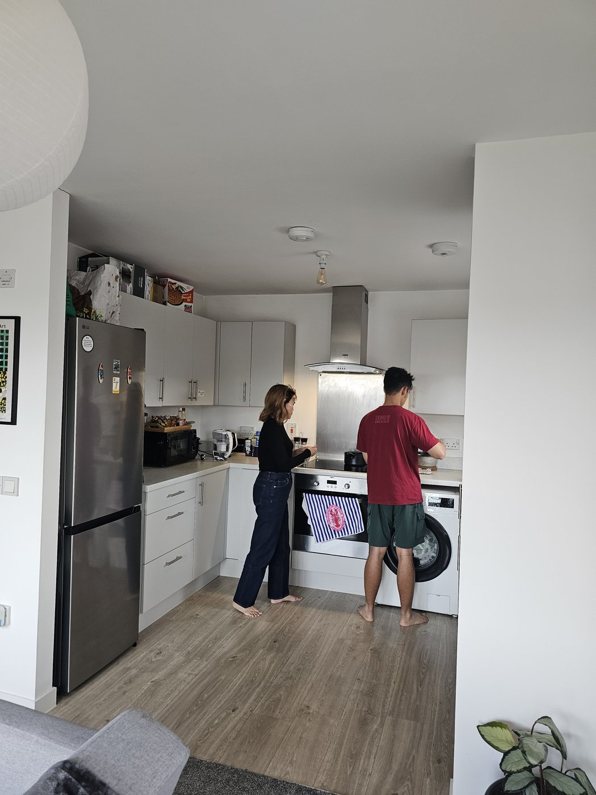
Yang disiapkan pemilik apartemennya ternyata lebih dari sekadar kunci: sereal, susu, dan camilan sudah tersedia di dapur. Dan satu lagi yang bikin semua orang langsung paham ini rumah siapa — indomie goreng.
Jadi sarapan pagi itu dimasak sendiri, di panci sendiri, dengan bau yang sangat jauh dari Skotlandia. Ini kedua kalinya perjalanan ini dibuka dengan indomie — yang pertama tiga hari lalu di apartemen Freising, sebelum semuanya berantakan di bandara.
Dan itu selisih yang layak dicatat buat siapa pun yang menyusun anggaran perjalanan sendiri. Sarapan di restoran Inggris untuk empat orang gampang menembus £40–50. Sarapan pagi ini nyaris tidak ada biayanya, karena bahannya sudah ada di dapur dan yang dikeluarkan cuma tenaga memasak.
Dan dua di antaranya tidak akan ditemukan di rumah Indonesia
Soal mesin cuci itu bukan detail sepele buat rombongan ini. Tiga hari lalu, mencuci baju harus ditempuh dengan menyetir ke kota sebelah, mencari parkir, membayar mesin, dan menunggu satu jam lebih. Pagi ini mesin yang sama ada di bawah meja dapur, dan tinggal dinyalakan.
Ini rumah orang, bukan kamar yang disewakan
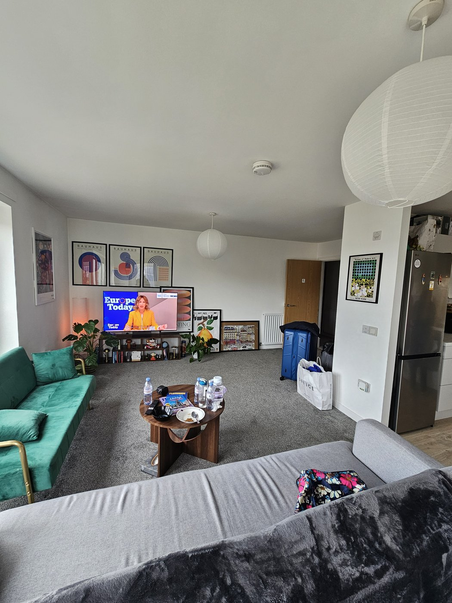
Dan ini bedanya menginap di rumah orang dengan menginap di hotel. Di dinding ada poster berbingkai yang dipilih seseorang, bukan lukisan seragam yang dipasang manajemen: deretan poster bergaya Bauhaus, satu poster museum dari New York, dan foto-foto lain yang jelas dikumpulkan sedikit demi sedikit.
Televisinya menyala di acara pagi, botol-botol air berjajar di meja bundar, dan koper-koper masih berdiri di dekat pintu. Tidak ada resepsionis, tidak ada sarapan prasmanan, dan tidak ada kartu kunci yang berbunyi. Yang ada cuma rumah, dan aturan sopan santun bertamu.
Kebalikan total dari sore kemarin
Kemarin sore kota ini menyambut dengan hujan yang datang tanpa aba-aba. Pagi ini, begitu tirai dibuka:
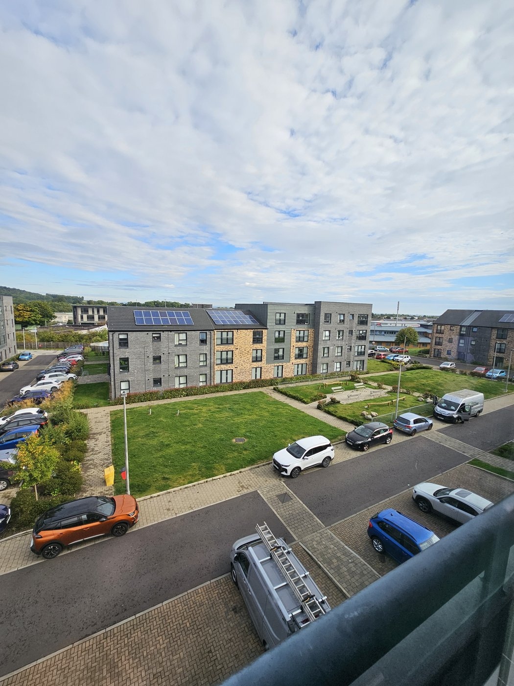
Panel surya itu bukan pemandangan yang diduga di kota sejauh ini ke utara. Edinburgh berada di garis lintang sekitar 56 derajat — lebih utara daripada Moskwa, jauh lebih utara daripada seluruh wilayah Amerika Serikat kecuali Alaska. Matahari di sini rendah dan sering tertutup.
Yang menyelamatkan hitungannya adalah panjang harinya. Di puncak musim panas, Edinburgh mendapat cahaya sekitar 17 jam sehari, dan bahkan di akhir Agustus seperti hari ini masih sekitar 14 jam. Jadi yang kurang di intensitas, dikejar lewat durasi.
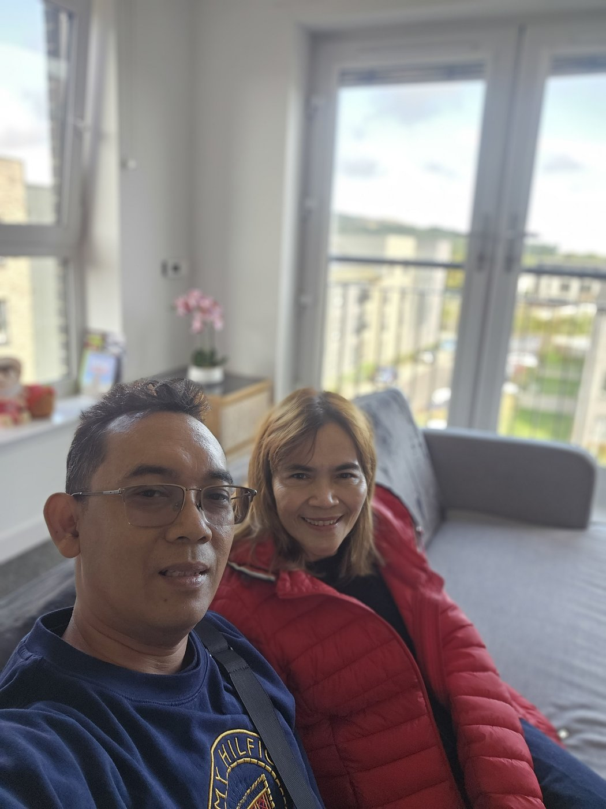
Dan satu aturan yang bikin pendatang kaget di pintu bus
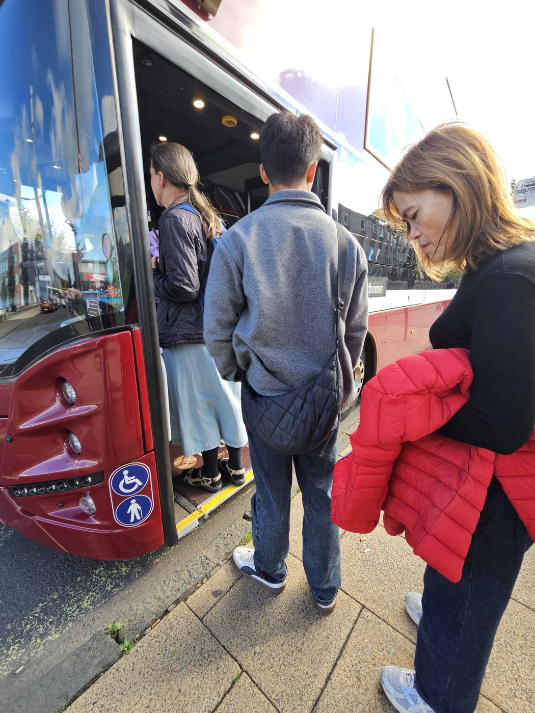
Naik bus di sini punya satu aturan yang sering bikin pendatang kikuk di depan sopir: kalau membayar tunai, uangnya harus pas. Sopir bus kota Edinburgh tidak memberi kembalian — kalau kamu menyerahkan uang lebih, kelebihannya hilang begitu saja.
Sekarang jalan keluarnya gampang, dan ini yang dipakai hampir semua orang: tempelkan kartu bank tanpa kontak atau ponsel di mesin di dekat sopir. Sistemnya menghitung sendiri, dan kalau kamu naik berkali-kali dalam sehari, totalnya otomatis berhenti di tarif harian — tidak akan ditagih lebih dari itu meski naik sepuluh kali.
Dan soal dua stiker biru tadi: di bus Inggris, ruang di dekat pintu tengah itu resmi milik pengguna kursi roda, dan kereta bayi hanya boleh memakainya kalau sedang kosong. Kalau ada pengguna kursi roda naik, kereta bayi yang harus dilipat atau pindah. Aturannya tertulis, bukan sekadar imbauan.
Dan namanya berasal dari sebuah timbangan
Turun dari bus, bangunan pertama yang menagih perhatian berdiri di sebuah persimpangan kecil, dengan menara tinggi dan jam yang masih berjalan.
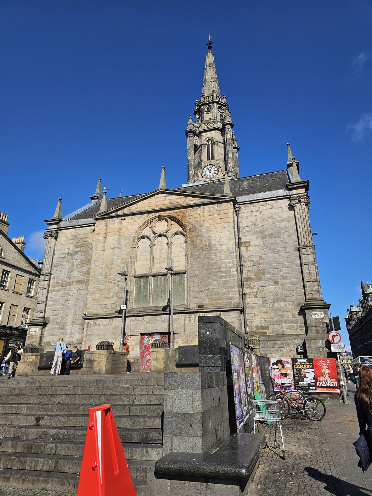
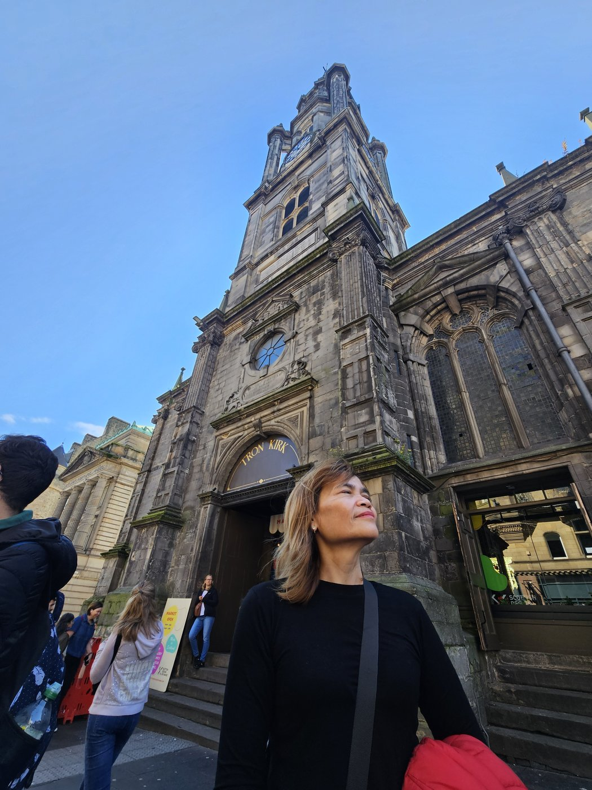
Bangunan ini dibangun pada abad ke-17 sebagai gereja jemaat kota, dan berfungsi begitu selama tiga ratus tahun lebih. Sejak pertengahan abad ke-20, dia berhenti jadi gereja. Sekarang bagian dalamnya dipakai untuk keperluan lain — pasar kerajinan, ruang pameran, dan selama festival, panggung.
Yang paling menarik justru namanya. Tron itu bukan nama orang dan bukan nama santo — itu nama sebuah alat: timbangan umum yang dulu dipasang di jalan ini untuk menimbang barang dagangan.
Fungsinya persis seperti timbangan pasar yang diawasi pemerintah: supaya pembeli tidak ditipu takaran. Dan hukumannya juga dijalankan di tempat yang sama — pedagang yang ketahuan curang diikat di dekat timbangan itu supaya dilihat orang sekota. Gerejanya dibangun belakangan di sebelah timbangan itu, lalu ikut memakai namanya.
Hari terakhir Agustus, dan jalanannya masih penuh
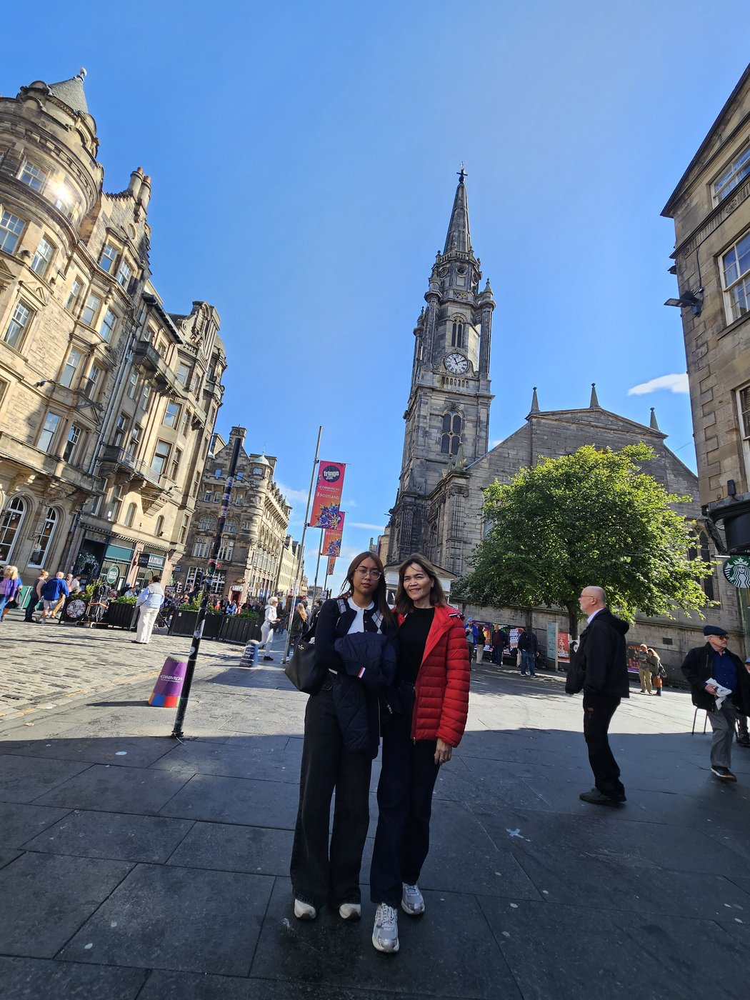
Jalan ini namanya Royal Mile, dan dia satu garis lurus yang menghubungkan dua ujung kekuasaan kota: kastil di atas bukit di satu ujung, istana raja di ujung satunya.
Ada satu hal lucu di namanya. Panjangnya sedikit lebih dari satu mil Inggris — dan itu bukan kebetulan, karena yang dipakai dulu bukan mil Inggris melainkan mil Skotlandia, satuan lama yang panjangnya sekitar 1,8 kilometer, jauh lebih panjang daripada mil Inggris yang 1,6 kilometer. Satuannya sudah lama dihapus, tapi namanya keburu menempel.
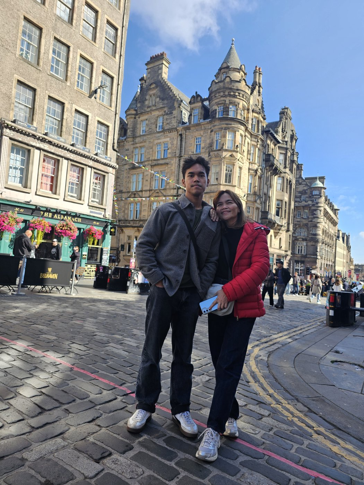
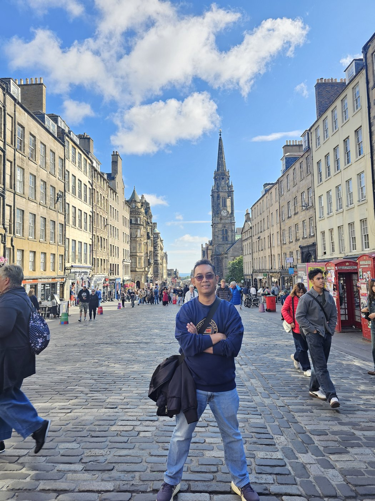
Dan inilah wujud nyata dari angka yang kemarin dipakai menjelaskan harga penginapan. Sepanjang Agustus, kota berpenduduk di bawah satu juta ini kedatangan pengunjung dalam jumlah yang jauh melampaui kapasitas normalnya. Hari ini hari terakhir bulan itu, dan jalanannya masih seperti ini.
Perhatikan juga permukaan jalannya: bukan aspal, tapi balok-balok batu persegi yang dipasang satu per satu. Enak dilihat, tidak enak untuk roda koper, dan sangat tidak enak untuk sepatu hak. Itu sebabnya hampir semua orang di foto ini pakai sepatu datar.
Orang yang namanya ada di buku ekonomi SMA, berdiri di jalanan aslinya
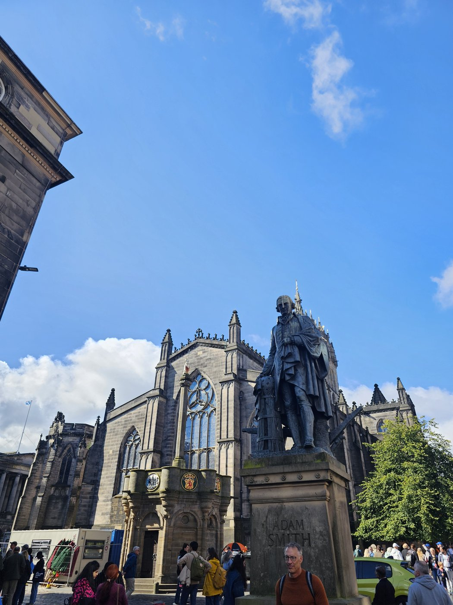
Buat yang pernah duduk di kelas ekonomi, nama ini pasti terasa akrab. Adam Smith — orang Skotlandia, hidup di abad ke-18, dan menulis buku yang biasa disebut sebagai titik awal ilmu ekonomi modern: The Wealth of Nations, terbit tahun 1776.
Isi gagasannya yang paling sering dikutip: bahwa masyarakat bisa jadi makmur bukan karena tiap orang berniat baik, tapi karena tiap orang mengejar kepentingannya sendiri dalam sebuah aturan main yang sehat — tukang roti membuat roti bukan karena kasihan, tapi karena ingin dibayar, dan hasilnya semua orang tetap dapat roti.
Yang sering dilupakan: Smith bukan orang yang menganggap pasar selalu benar. Bukunya yang lebih dulu terbit justru soal moral, dan di The Wealth of Nations sendiri dia beberapa kali memperingatkan bahwa pengusaha yang berkumpul cenderung bersekongkol menaikkan harga.
Dan tempatnya berdiri itu bukan kebetulan. Smith menghabiskan tahun-tahun terakhir hidupnya di Edinburgh dan dimakamkan tidak jauh dari jalan ini. Patungnya menghadap ke jalan yang dulu memang pasar sungguhan — dengan timbangan umum di ujungnya, seperti yang baru saja dilewati.
Dan tiap gang punya papan sejarahnya sendiri
Dari jalan besar itu, tiap beberapa langkah ada celah sempit di antara gedung — kadang cuma selebar dua orang, dan hampir selalu menurun tajam.
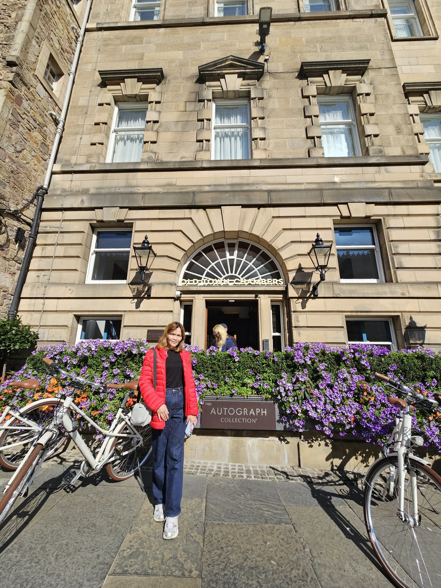
Gang-gang seperti ini punya nama sendiri di sini: close. Dulu tiap close adalah jalan masuk ke halaman dan rumah-rumah di belakang deretan gedung utama, dan namanya diambil dari siapa yang tinggal atau berdagang di situ. Ratusan tahun kemudian nama-nama itu masih terpasang.
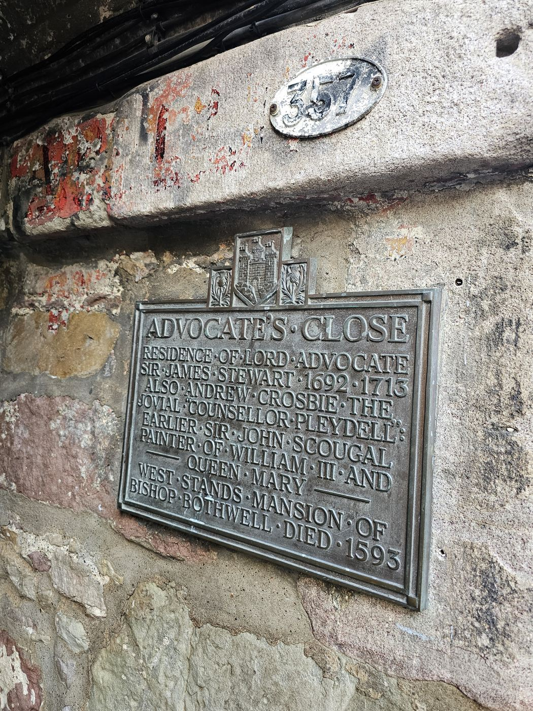
Jadi dalam satu papan sebesar buku tulis, gang ini menyebut seorang jaksa agung, seorang pengacara yang jadi tokoh novel, seorang pelukis istana, dan seorang uskup abad ke-16 — semuanya pernah tinggal di celah selebar dua orang ini.
Dan itu menjelaskan sesuatu tentang Kota Tua Edinburgh yang sulit dipercaya kalau tidak dilihat sendiri: karena kotanya tidak bisa melebar, semua orang dulu tinggal bertumpuk di ruang yang sama. Bangsawan, pengacara, pedagang, dan buruh bisa berada di satu gedung, cuma beda lantai.
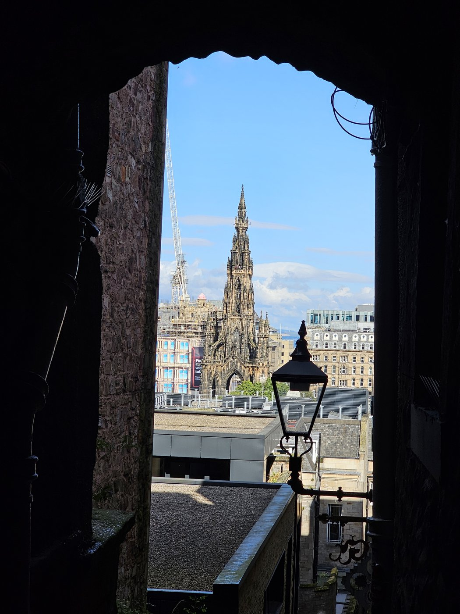
Foto ini melengkapi yang kemarin dilihat dari arah sebaliknya. Kemarin, dari peron stasiun, kotanya terlihat menjulang di atas kepala. Hari ini, dari dalam gang, kota yang sama terlihat berada jauh di bawah kaki. Yang berpindah bukan kotanya, tapi posisi kami di lerengnya.
Dan menurut definisinya sendiri, sebenarnya bukan katedral juga
Bangunan yang tadi berdiri di belakang patung Adam Smith itu tujuan terakhir pagi ini. Namanya St Giles’ Cathedral. Dan begitu masuk, ada satu hal yang perlu diluruskan buat pembaca Indonesia, karena di kita kata “katedral” hampir otomatis berarti satu hal.
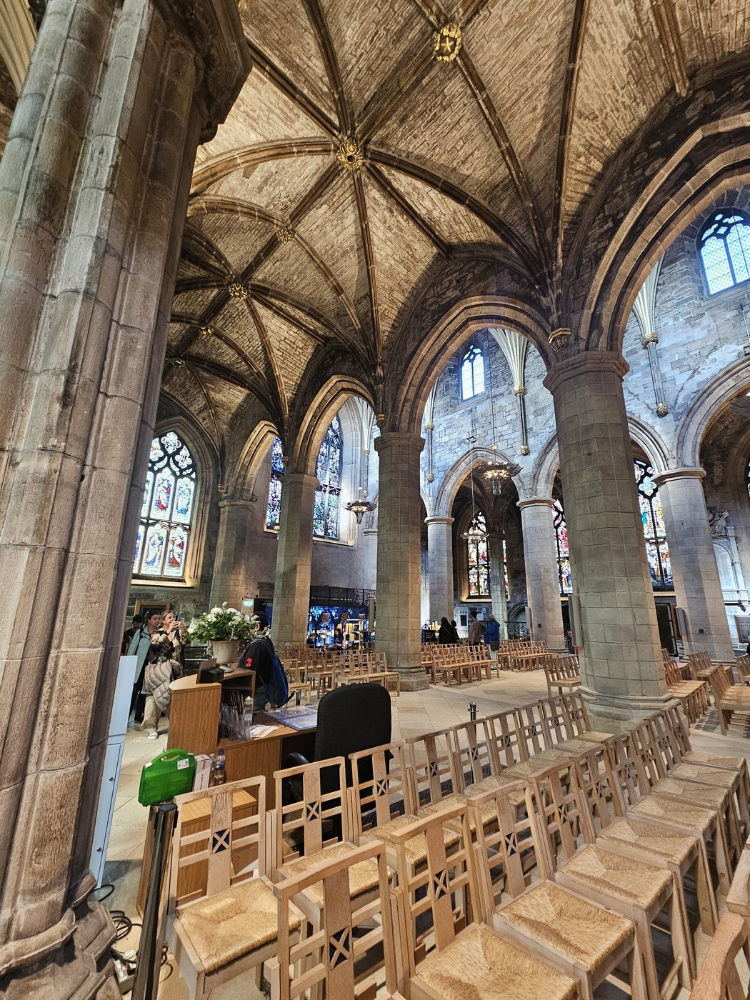
Ini bukan gereja Katolik. St Giles’ adalah gereja Church of Scotland — gereja Protestant beraliran Presbiterian, yang jadi gereja nasional Skotlandia.
Dan ada satu lapis lagi yang lebih menggelitik: secara definisi, dia sebenarnya bukan katedral.
Lalu kenapa bangunannya terasa “Katolik”? Karena dulu memang begitu. Gereja ini berdiri sejak Abad Pertengahan dan selama ratusan tahun adalah gereja Katolik. Yang mengubahnya adalah Reformasi Skotlandia tahun 1560, ketika negeri ini berpindah ke Protestan — dan salah satu tokoh utamanya, John Knox, justru menjadi pendeta di gereja ini.
Perubahannya lalu terlihat di dalamnya, dan bisa dicek sendiri dari foto: tidak ada altar samping, tidak ada patung orang kudus, tidak ada bilik pengakuan dosa. Yang jadi pusat ruangan bukan altar, melainkan mimbar — karena inti ibadahnya adalah pembacaan dan penjelasan Alkitab.
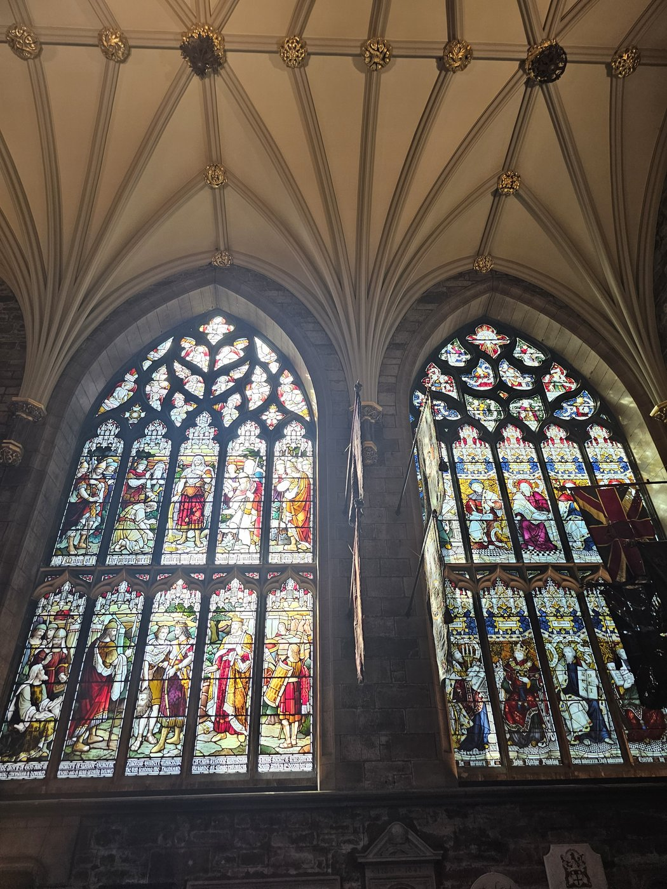
Bendera-bendera tua yang tergantung di dinding itu juga bukan hiasan. Itu panji resimen — dititipkan di gereja setelah tidak dipakai lagi, dan sengaja dibiarkan lapuk sendiri, tidak diperbaiki.
Jadi ringkasnya, untuk yang bertanya-tanya: bangunannya berumur Abad Pertengahan dan lahir sebagai gereja Katolik; isinya Protestan sejak 1560; namanya katedral karena dua periode singkat di abad ke-17; dan sekarang dia gereja Presbiterian yang tidak punya uskup sama sekali. Semua lapisan itu berdiri di satu gedung yang sama.
Dan yang pertama membenarkan tebakan tadi
Di beberapa titik di dalam gereja ini berdiri papan penjelasan berwarna biru tua. Yang pertama persis membahas hal yang barusan diperhatikan sendiri.
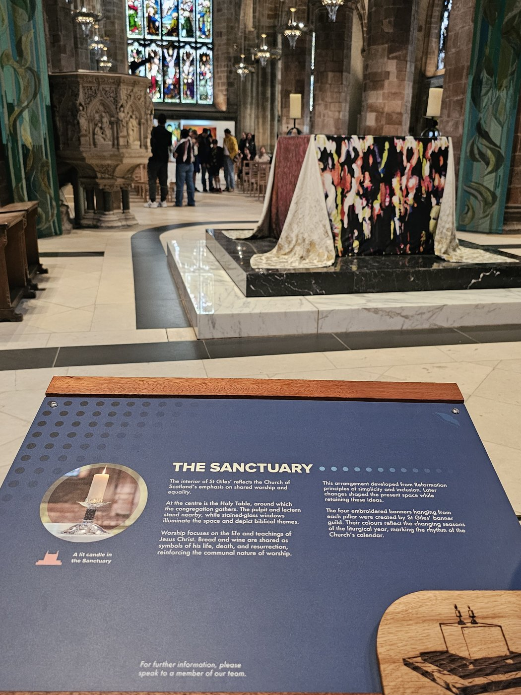
Kalimat pembukanya langsung menyebut alasannya: bagian dalam St Giles’ “mencerminkan penekanan Church of Scotland pada ibadah bersama dan kesetaraan.”
Lalu dijelaskan susunannya: di tengah ruangan ada Holy Table — meja perjamuan — dan jemaat berkumpul mengelilinginya. Mimbar dan tempat pembacaan Alkitab berdiri di dekatnya. Roti dan anggur dibagikan sebagai lambang, dan menurut papan itu susunan seperti ini tumbuh dari prinsip Reformasi: sederhana, dan semua orang setara jaraknya dari pusat.
Empat kain sulam yang menggantung di tiang-tiangnya juga bukan hiasan sembarangan. Menurut papannya, itu buatan kelompok penyulam gereja ini sendiri, dan warnanya berganti mengikuti musim dalam kalender gereja.
Jawabannya ada di satu lemari kaca, di tengah ruangan
Tadi disebut bahwa gereja ini tidak punya uskup, dan namanya cuma sisa dari dua periode singkat di abad ke-17. Nah, penyebab persisnya dipajang di sini, dalam sebuah lemari kaca berisi lembaran perkamen tua.
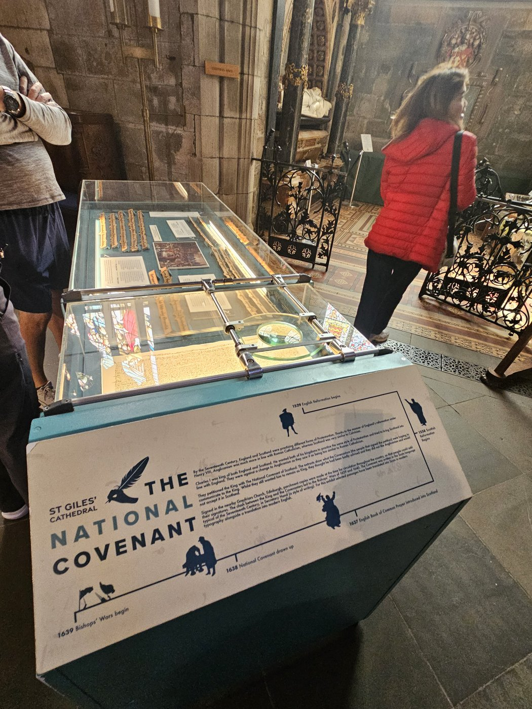
Garis waktu di papan itu, apa adanya seperti tercetak:
Yang bikin dokumen ini menarik bukan cuma isinya, tapi nadanya. Menurut papan itu, para penanda tangan tidak menuntut raja turun. Mereka tetap ingin Charles I jadi raja — mereka hanya yakin raja sedang salah dinasihati, dan menolak menerima aturan ibadah itu di Skotlandia.
Perkamen di lemari kaca itu juga menyimpan satu detail bahasa: Covenant ditulis dalam bahasa Skots abad ke-17, dengan gaya tulisan tangan yang disebut secretary hand. Di pameran ini beberapa bagiannya sudah disalin ulang dengan huruf cetak modern, berdampingan dengan terjemahan Inggris masa kini — karena tulisan aslinya sudah nyaris tidak terbaca orang zaman sekarang.
Dan begitulah lingkarannya tertutup. Perlawanan terhadap pemaksaan uskup dan buku doa itulah yang, setelah puluhan tahun bentrokan, membuat Church of Scotland akhirnya berdiri tanpa uskup sama sekali — dan meninggalkan sebuah gedung yang bernama katedral tapi tidak punya kursi uskup untuk diduduki siapa pun.
Bekas pastor Katolik yang jadi wajah Reformasi Skotlandia
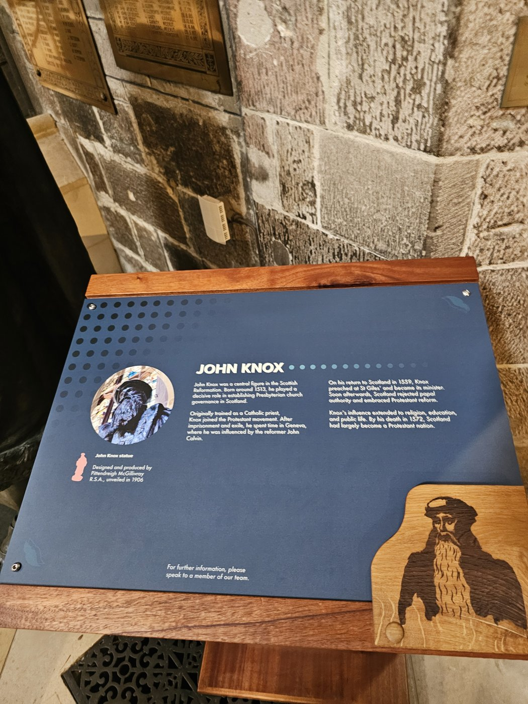
Isi papannya, diringkas: Knox lahir sekitar tahun 1513, dan awalnya seorang pastor Katolik. Dia lalu bergabung dengan gerakan Protestan, sempat dipenjara, lalu hidup di pengasingan — termasuk beberapa waktu di Jenewa, tempat dia dipengaruhi langsung oleh reformator John Calvin.
Pulang ke Skotlandia tahun 1559, dia berkhotbah di gereja ini dan kemudian menjadi pendetanya. Dan menurut papan itu, saat dia meninggal tahun 1572, Skotlandia sudah sebagian besar menjadi negeri Protestan.
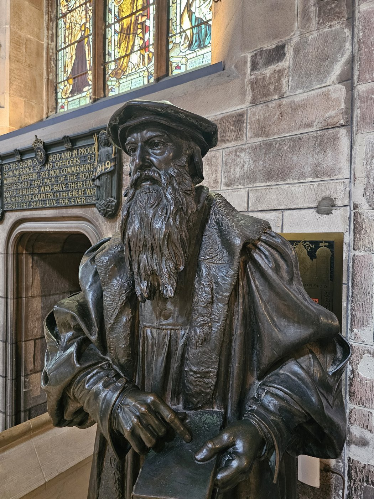
Perhatikan bendanya yang dipegang. Bukan pedang, bukan tongkat kekuasaan, tapi buku yang terbuka. Untuk gerakan yang intinya memindahkan pusat ibadah dari altar ke pembacaan Alkitab, itu pilihan yang sangat sengaja.
Dan pengaruhnya, kata papan itu, tidak berhenti di urusan gereja: Knox juga menggerakkan urusan pendidikan dan kehidupan publik. Gagasan bahwa tiap jemaat perlu sekolah supaya orang bisa membaca Alkitab sendiri adalah salah satu akar kenapa Skotlandia belakangan dikenal punya tingkat melek huruf yang tinggi — dan kenapa universitas kotanya — yang kemarin sore dilewati — bisa lahir cuma sebelas tahun setelah Knox meninggal, didirikan oleh dewan kotanya sendiri dan bukan oleh gereja.
Dan ini bukan kontradiksi, tapi urutan waktu
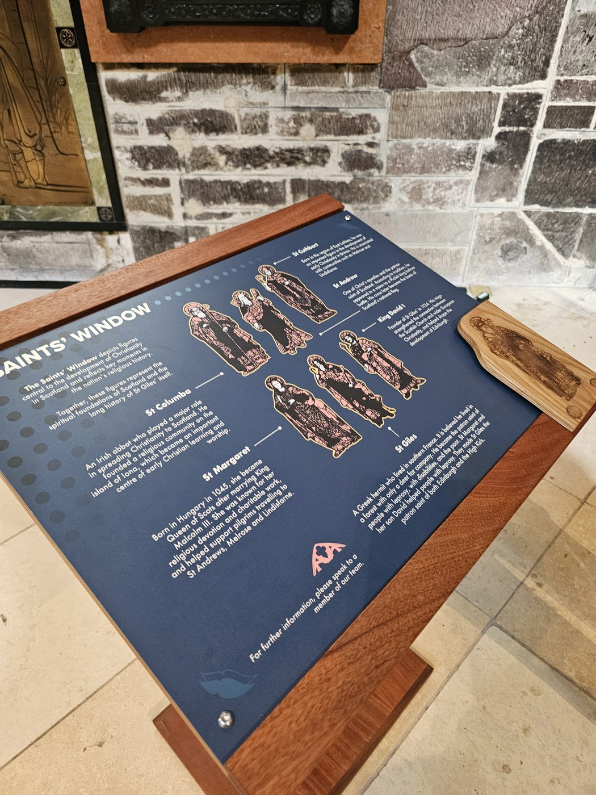
Sekilas ini aneh: gereja yang menyingkirkan patung orang kudus, tapi punya jendela khusus berisi enam orang kudus lengkap dengan keterangannya. Penjelasannya soal urutan waktu — patung-patungnya disingkirkan pada abad ke-16, sedangkan kaca-kaca ini dipasang pada abad ke-19, ketika sikapnya sudah jauh melunak dan gambar dianggap alat penjelas, bukan objek pemujaan.
Tiga di antaranya paling menjelaskan negeri ini:
Jadi satu jendela ini memuat seorang pertapa Yunani, seorang ratu kelahiran Hungaria, dan seorang biarawan Irlandia — dan ketiganya dipasang di gereja nasional Skotlandia. Tidak ada satu pun yang orang Skotlandia.
Dan dua nama dengan tanggal yang sama persis
Kalau ditelusuri dindingnya, gereja ini berubah jadi sesuatu yang lain: daftar orang yang tidak pulang.
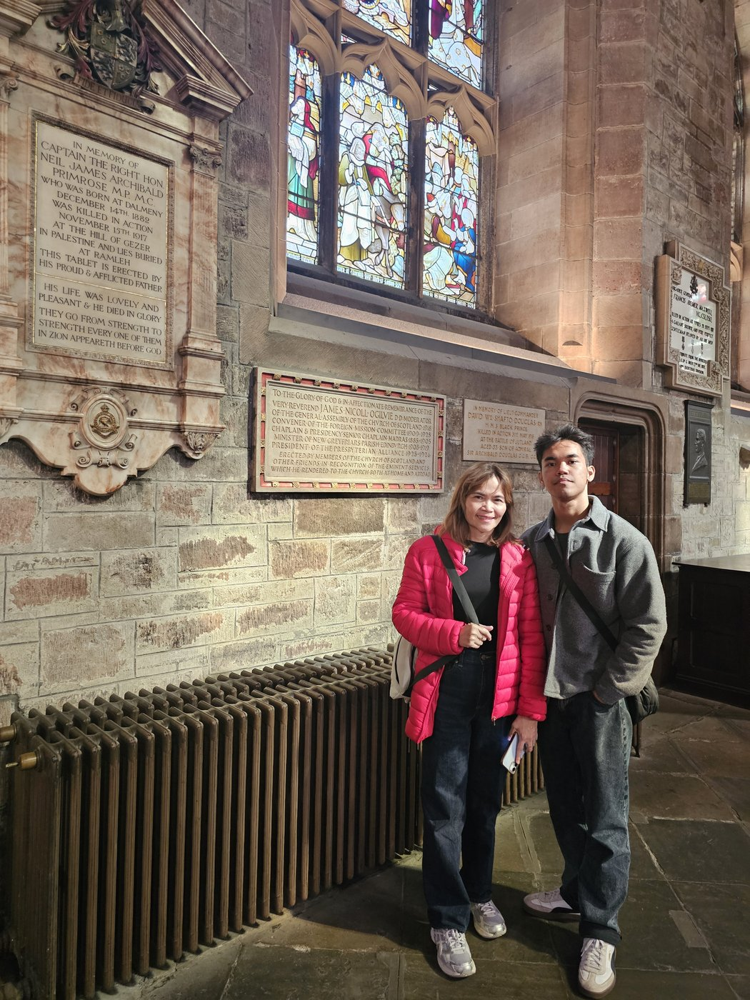
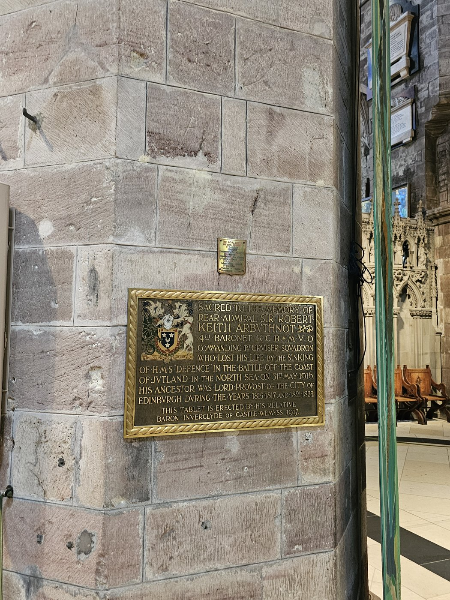
Dan di dinding yang sama, beberapa langkah saja dari situ, ada papan lain: untuk seorang perwira bernama Douglas, gugur di HMS Black Prince — di pertempuran yang sama, pada tanggal yang sama persis: 31 Mei 1916. Umurnya 33 tahun.
Dua nama, dua kapal berbeda, satu hari. Itu Pertempuran Jutland, pertempuran laut terbesar Perang Dunia I, dan kedua kapal yang disebut di dinding ini termasuk yang tenggelam hari itu.
Buat pengunjung yang datang untuk melihat arsitektur, dinding seperti ini gampang dilewati. Tapi kalau berhenti sebentar dan membaca satu-dua papannya, gereja ini berhenti terasa seperti museum dan mulai terasa seperti tempat orang benar-benar berduka.
Orgel, makam, dan langit-langit biru
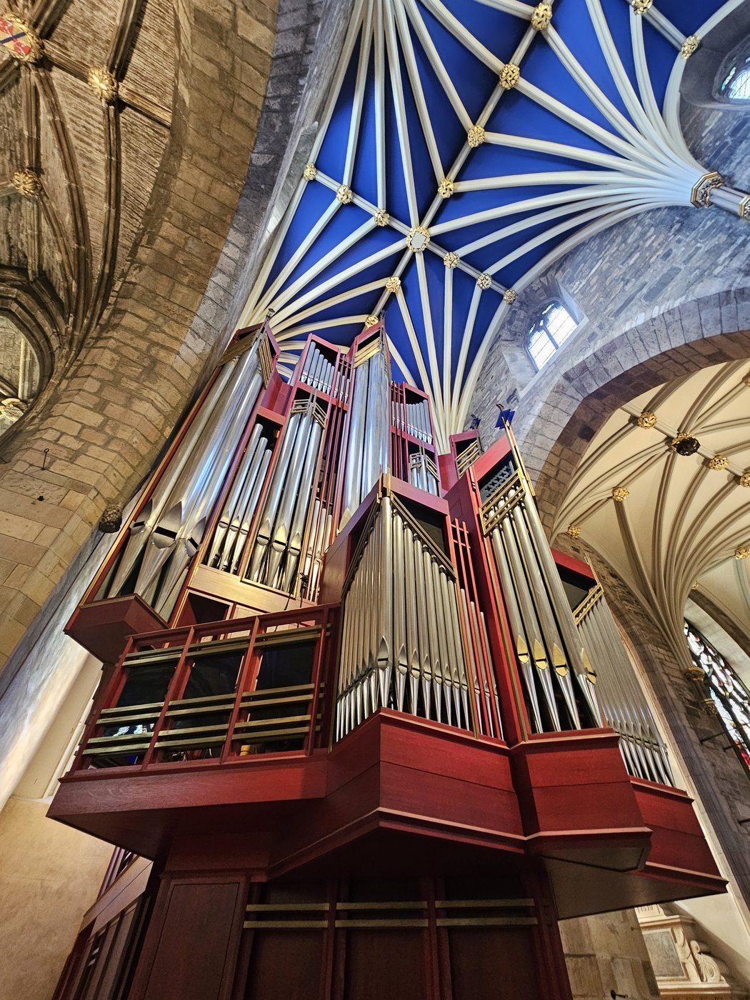
Langit-langit biru itu bukan warna asli batunya — itu cat, dan cuma di sebagian ruang. Berdiri di titik yang tepat, kamu bisa melihat keduanya sekaligus dalam satu pandangan: langit-langit yang dicat biru cerah di satu sisi, dan batu abu-abu telanjang abad pertengahan tepat di sebelahnya. Gereja ini memang begitu di mana-mana — tidak ada satu gaya yang menang.
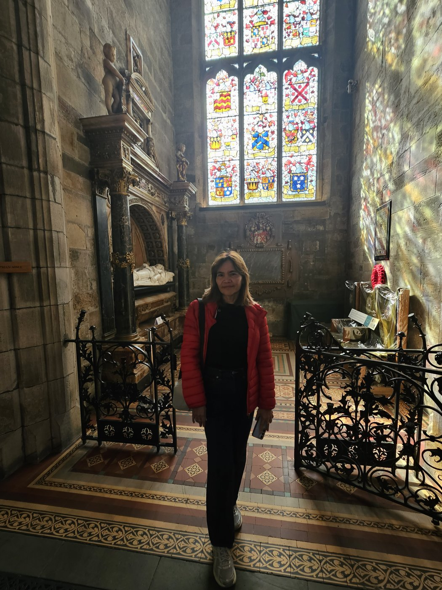
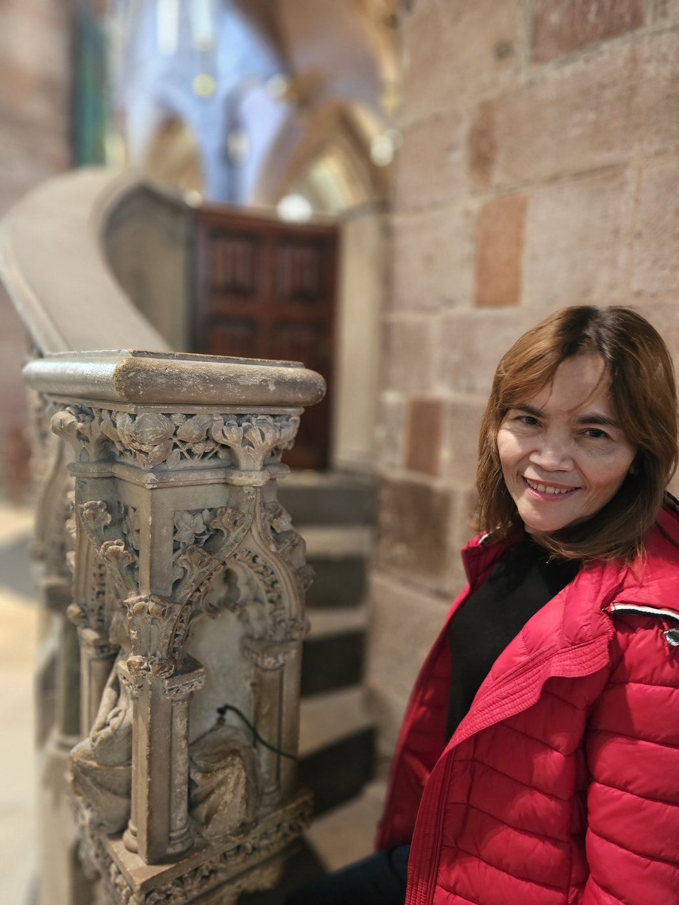
Kiri: salah satu makam di ruang sampingnya, lengkap dengan patung berbaring dari batu putih. Perhatikan jendelanya — isinya lambang-lambang keluarga, bukan gambar santo. Kanan: pahatan batunya, dari jarak dekat.
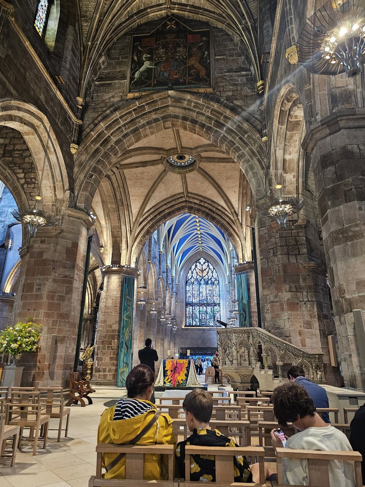
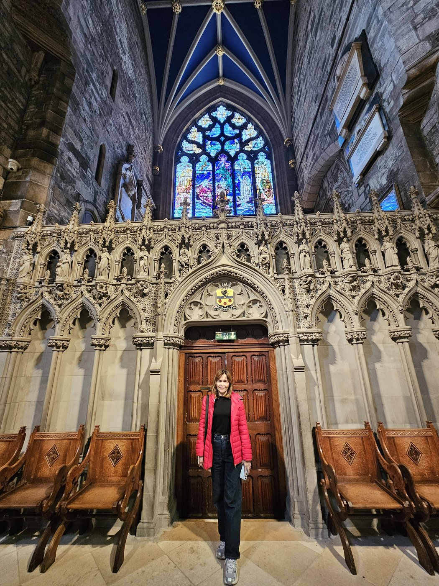
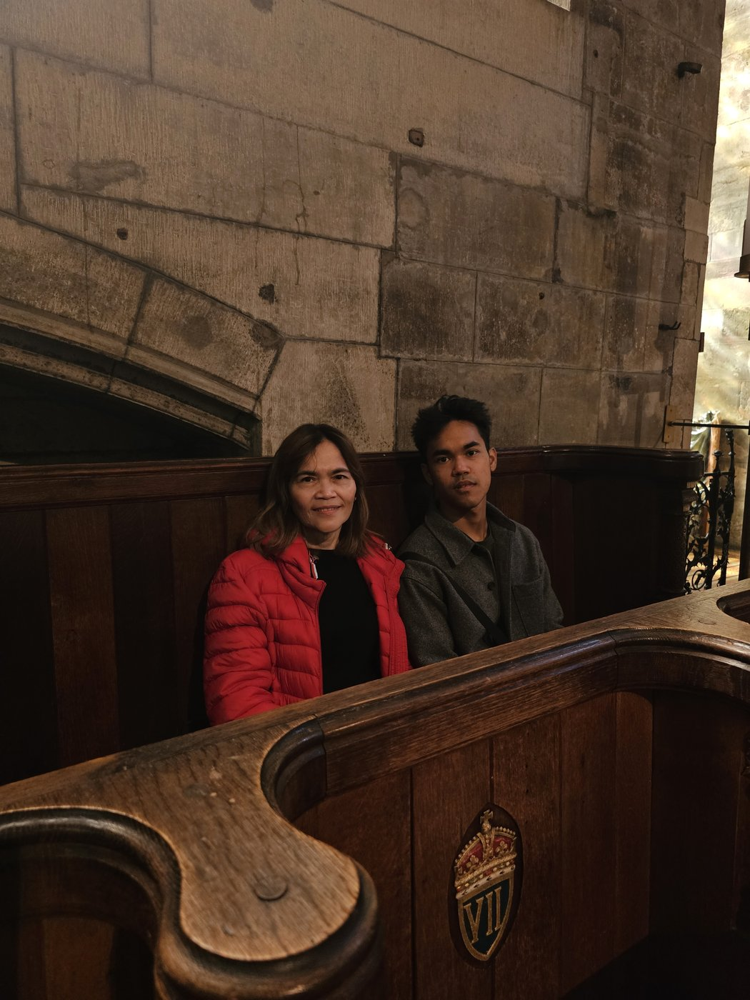
Kiri: pintu berukir di ujung barat, dengan jendela modern berwarna biru menyala di atasnya — gayanya jelas abad ke-20, berdiri di tengah batu abad pertengahan. Kanan: bangku kayu gelap berlambang, jenis tempat duduk yang berbeda dari kursi jemaat biasa.
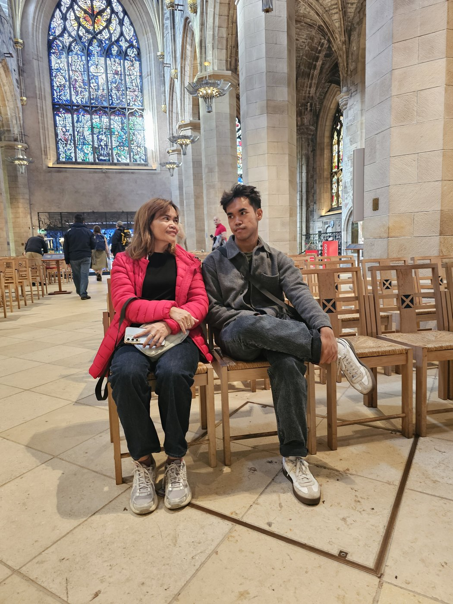
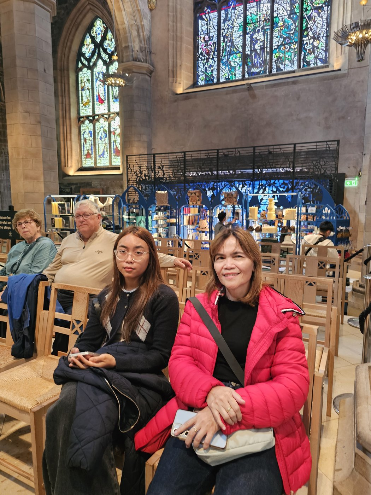
Dan itu barangkali kesan yang paling tepat untuk menutup bagian ini. Gereja ini bukan satu zaman. Ada batu abad pertengahan, ada ruang yang dibersihkan Reformasi, ada kaca patri Victoria, ada jendela biru abad ke-20, ada orgel modern, dan ada rak lilin yang menyala hari ini. Semuanya menumpuk di gedung yang sama, tanpa ada yang dihapus sepenuhnya.
Kerucut lalu lintas di kepala patung, dan itu bukan kejadian sekali
Keluar dari gereja, jalan sedikit menyusuri jalan yang sama, dan berdiri satu patung perunggu besar yang bikin semua orang berhenti — bukan karena patungnya, tapi karena benda di kepalanya.
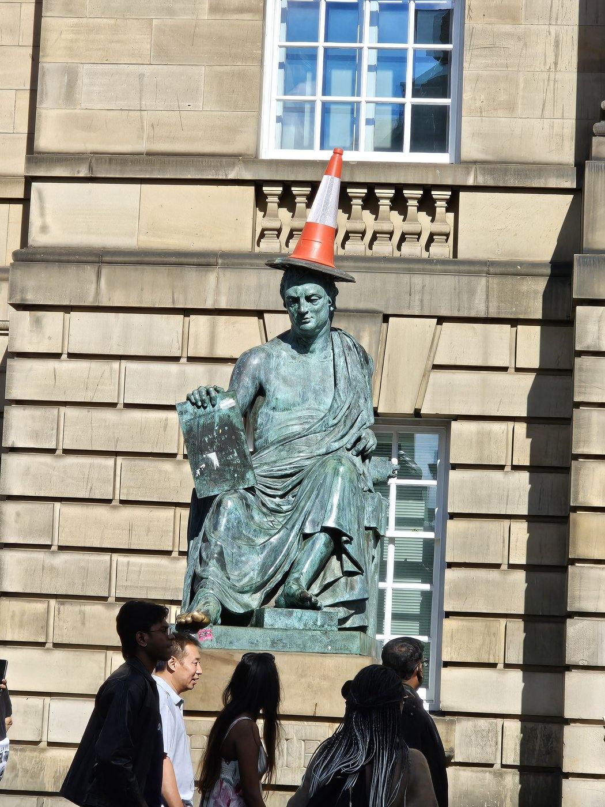
Ini bukan kejadian sekali dua kali. Menaruh kerucut lalu lintas di kepala patung adalah keisengan yang sudah puluhan tahun jadi kebiasaan di kota-kota besar Skotlandia — konon biasanya dikerjakan tengah malam, oleh orang yang baru pulang dari pub.
Pola berikutnya juga selalu sama: petugas kota menurunkannya, dan beberapa hari kemudian kerucutnya naik lagi.
Contoh paling terkenalnya bukan di sini, tapi di Glasgow, di sebuah patung berkuda yang kerucutnya nyaris tidak pernah absen. Beberapa tahun lalu pemerintah kotanya berencana meninggikan alas patung itu supaya tidak terjangkau lagi. Yang terjadi justru sebaliknya: warga ramai-ramai membela kerucutnya, petisinya meledak dalam hitungan jam, dan rencana itu dibatalkan.
Jadi sekarang statusnya aneh tapi menyenangkan: vandalisme kecil yang berubah jadi semacam ciri khas kota, dibiarkan hidup karena penduduknya sendiri yang menghendaki.
Salah satu pemikir paling berpengaruh yang pernah lahir di kota ini
Perhatikan patungnya sendiri, terlepas dari kerucutnya. Seorang lelaki duduk, berjubah gaya Yunani-Romawi, bertelanjang kaki, memegang buku yang terbuka. Padahal orang yang digambarkan hidup di abad ke-18 dan tentu tidak pernah berpakaian begitu.
Ini David Hume — filsuf kelahiran Edinburgh, sahabat dekat Adam Smith yang patungnya kami lewati beberapa ratus meter dari sini, dan salah satu nama terbesar dari periode yang biasa disebut Pencerahan Skotlandia.
(Catatan jujur: tulisan di alasnya tidak masuk ke dalam foto ini. Yang dipakai untuk memastikan adalah patungnya sendiri — sosok duduk berjubah klasik memegang buku, di jalan yang sama dengan patung Adam Smith, karya pematung yang sama.)
Gagasan Hume yang paling terkenal kira-kira begini: keyakinan kita seharusnya sebanding dengan bukti yang kita punya. Semakin luar biasa sebuah klaim, semakin besar bukti yang seharusnya dituntut sebelum mempercayainya. Dia juga terkenal keras mempertanyakan hal-hal yang diterima orang begitu saja — termasuk kebiasaan menyimpulkan sebab-akibat cuma karena dua hal selalu terjadi berurutan.
Dan di situlah letak lucunya. Filsuf yang seumur hidup mengajak orang menimbang bukti sebelum percaya, hari ini duduk dengan kerucut lalu lintas di kepalanya.
Tapi bagian yang paling menjelaskan justru ada di bawah, dan gampang terlewat kalau tidak diperhatikan.
Jadi di satu patung yang sama, dalam satu foto, ada dua hal sekaligus: kerucut yang menolak menghormati, dan jempol kaki yang diusap-usap seperti jimat.
Dan kalau mau ditarik jauh, itu justru lelucon yang paling pas untuknya. Orang yang menghabiskan hidupnya mempersoalkan takhayul, sekarang jempol kakinya diusapi orang supaya beruntung — sementara kepalanya dipakaikan kerucut jalanan.
Beberapa ratus meter dari keramaian, dan suaranya langsung berubah
Setelah kerucut tadi, jalan terus menjauh dari jalan besar — turun lewat gang, keluar ke jalan-jalan yang tidak masuk daftar tujuan siapa pun. Dan dalam lima menit berjalan, keramaian festival itu hilang.
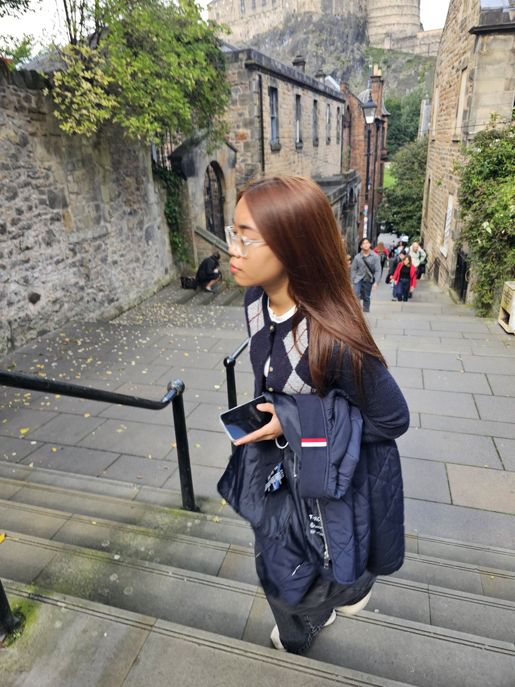
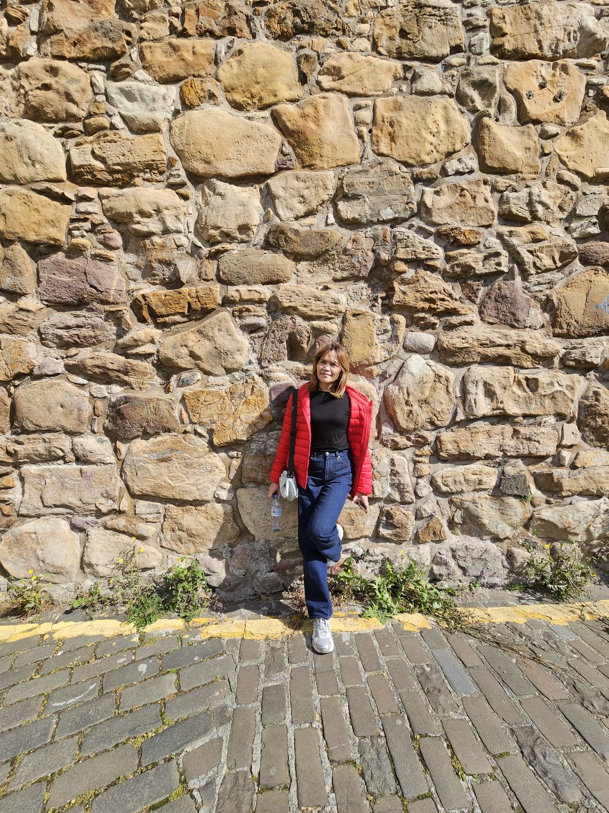
Ada dua cara menyusun dinding batu, dan Edinburgh memperlihatkan dua-duanya dalam jarak beberapa langkah:
Jadi kalau kamu jalan di kota ini dan memperhatikan dindingnya, kamu sebenarnya sedang membaca anggaran pembangunnya. Dinding batu kasar seperti di foto itu biasanya lebih tua, lebih murah, dan lebih jujur soal asal batunya.
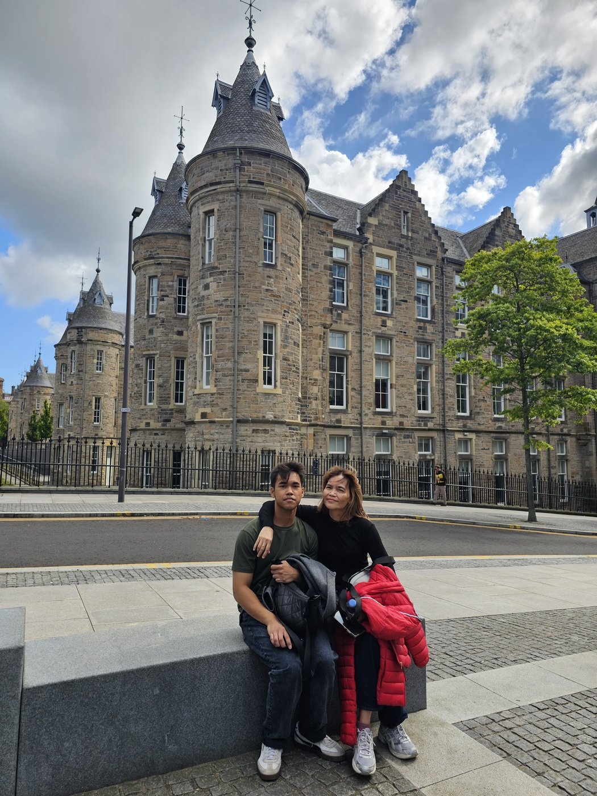
Gaya ini muncul di abad ke-19, waktu Skotlandia sedang sangat gemar merayakan masa lalunya sendiri. Rumah sakit, sekolah, kantor, bahkan rumah tinggal dibangun dengan menara bundar dan atap bergerigi — bukan karena butuh pertahanan, tapi karena bentuk itu dianggap paling “Skotlandia”.
Ironinya lumayan: bentuk yang dulu lahir dari kebutuhan bertahan dari serangan, dipakai lagi ratusan tahun kemudian murni sebagai selera.
Dan ini bukan lelucon lokal, tapi masalah kota beneran
Lalu di rumput di tepi jalan, muncul makhluk yang menurut penduduk sini paling menyebalkan di seluruh kota.
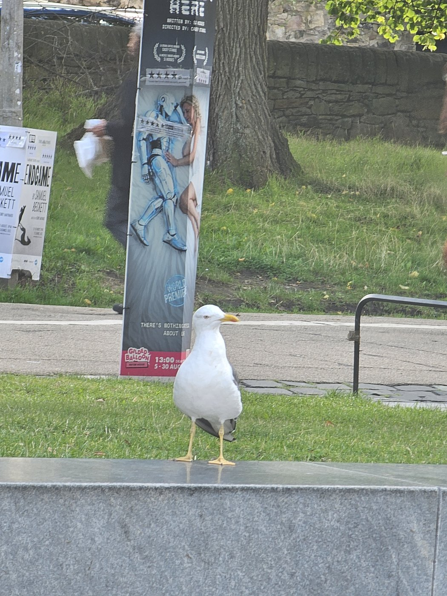
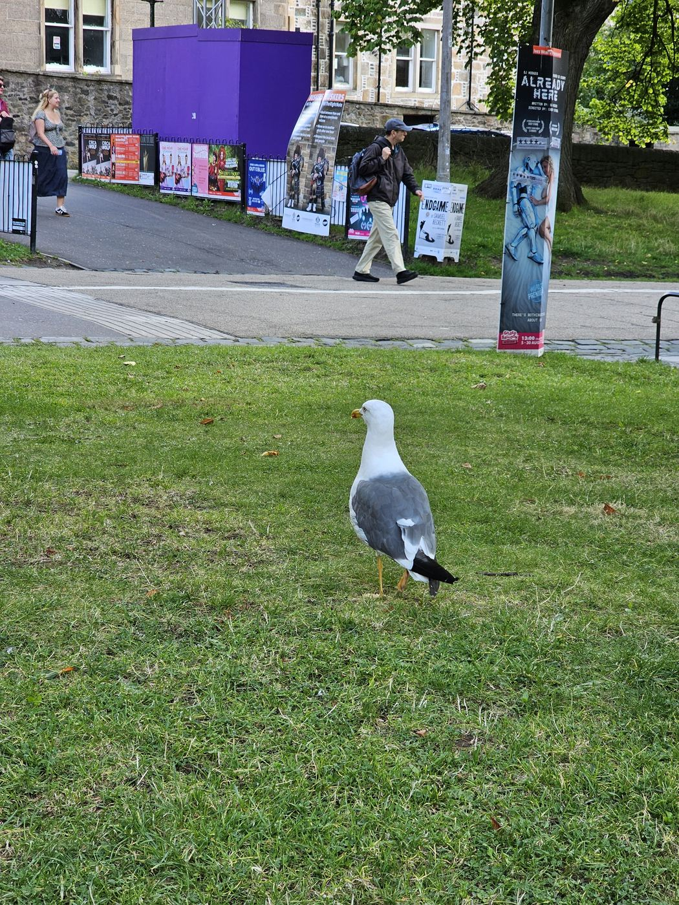
Kelihatannya lucu di foto. Di lapangan, burung ini sudah lama jadi keluhan resmi di kota-kota pesisir Inggris dan Skotlandia — dan Edinburgh termasuk yang paling parah tiap musim panas.
Dan sebabnya sebenarnya bukan burungnya. Kota memberi mereka dua hal yang tidak ada di tebing pantai asalnya: atap datar yang aman untuk bersarang, dan makanan yang berlimpah di tempat sampah dan di tangan orang. Sekali satu generasi camar belajar bahwa manusia berarti makanan gratis, kebiasaan itu diturunkan ke anak-anaknya.
Jadi kalau kamu makan di luar ruangan di kota ini: duduk, jangan berjalan; punggungi tembok kalau bisa; dan jangan sekali-kali memberi makan. Yang kamu kasih hari ini akan jadi masalah orang lain besok.
Beberapa menit jalan kaki, tiga hal yang sekilas tidak nyambung
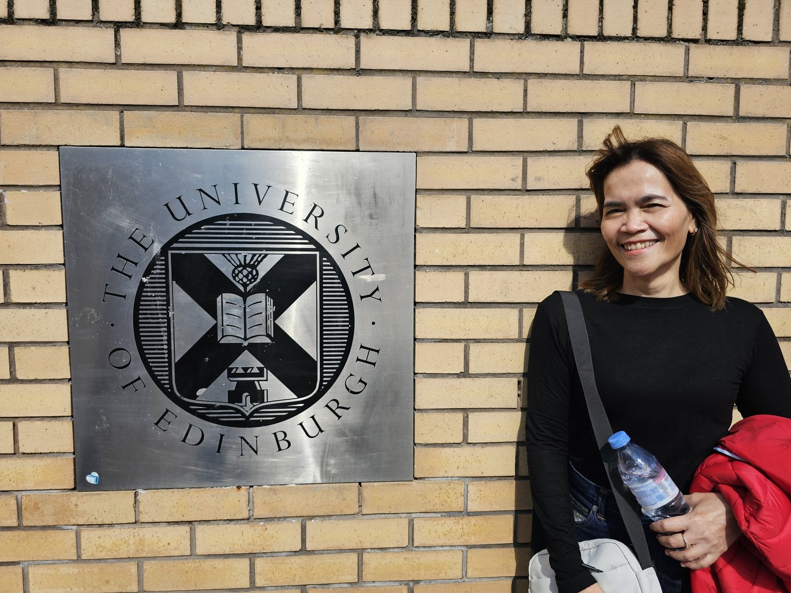
Empat benda itu bukan hiasan acak, dan tiga di antaranya sudah muncul di jurnal ini:
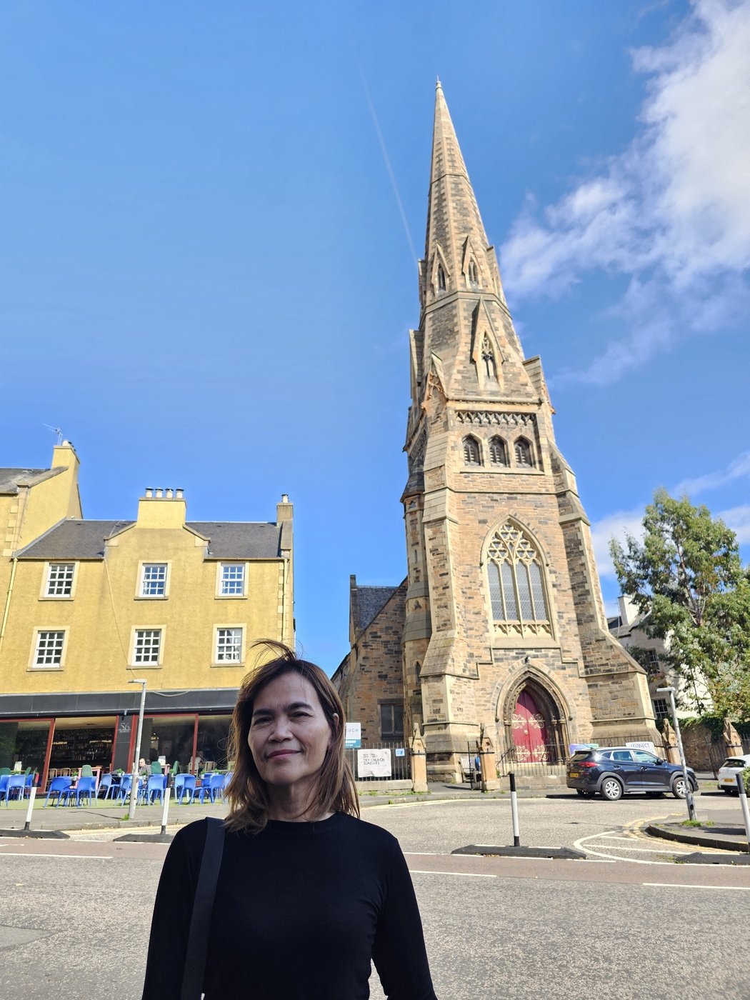
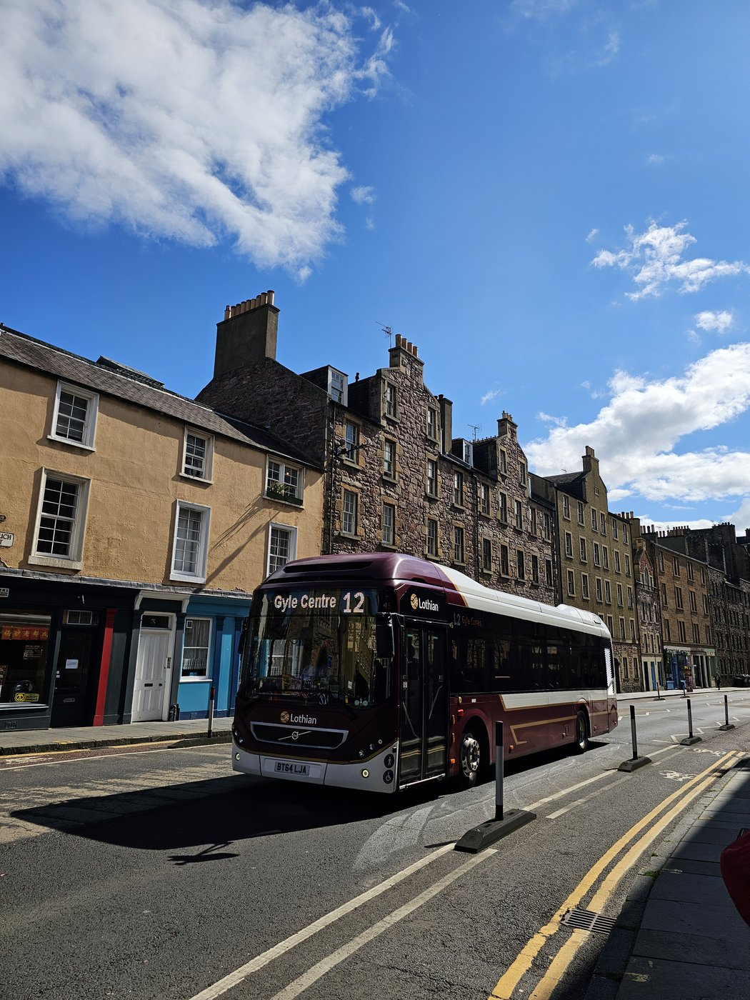
Kiri: gereja bermenara runcing dengan pintu merah menyala — warna yang jarang dipakai gereja tua, dan di sini justru jadi penanda bahwa gedungnya masih dipakai. Kanan: bus kota nomor 12 tujuan Gyle Centre, merah marun dan putih, warna khas bus Edinburgh.
Satu jam lebih di meja, dan satu pelajaran belanja
Jam satu kurang, urusan berikutnya sudah jelas: cari makan. Dan yang dipilih, di kawasan dekat kampus, adalah restoran Vietnam.
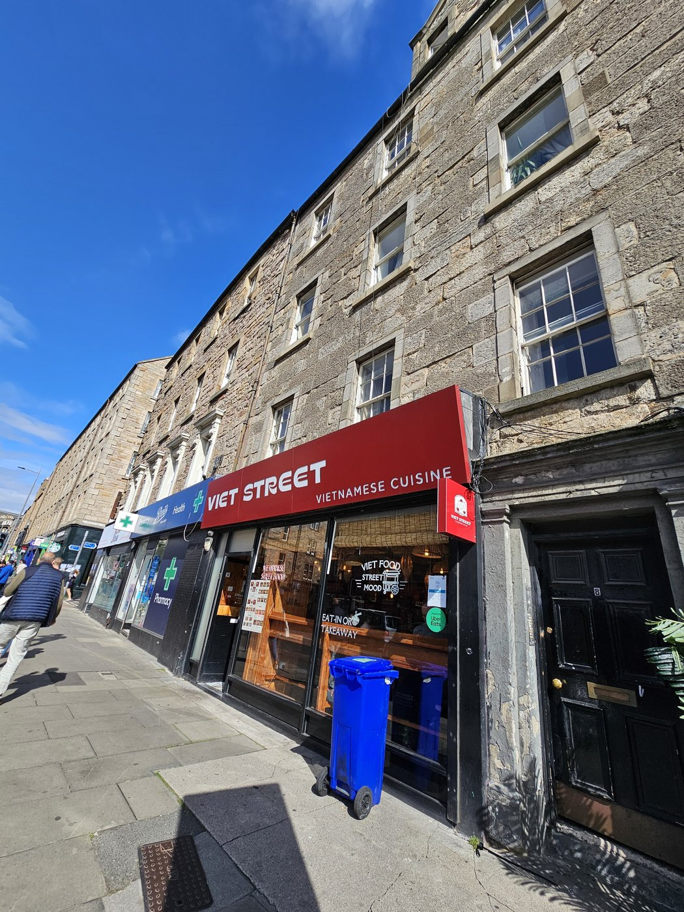
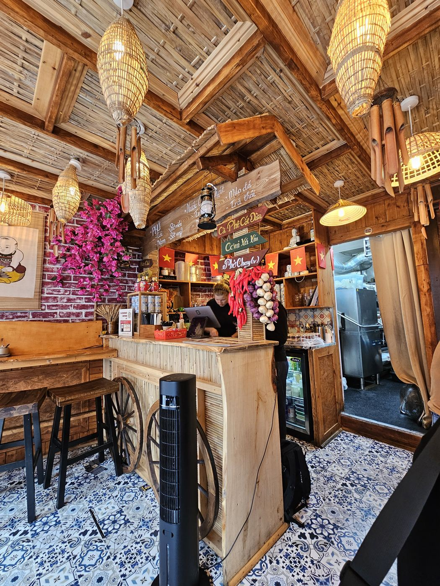
Papan-papan kayu di dindingnya ditulis dalam bahasa Vietnam, dan beberapa di antaranya bisa ditebak artinya begitu dibaca pelan-pelan: Phở Chay — pho vegetarian, Cà Phê Cốt Dừa — kopi santan kelapa, Trà Thái — teh Thailand.
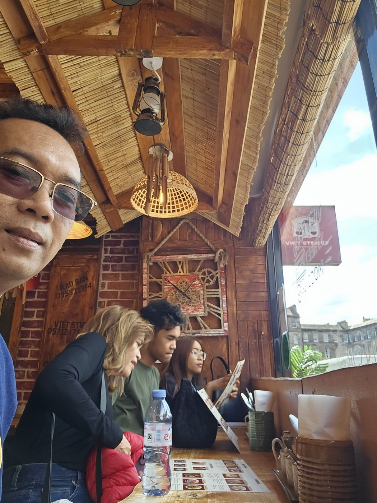
Dan di sinilah pelajaran paling berguna dari makan siang ini, yang tidak tertulis di mana-mana dan cuma ketahuan kalau bertanya:
Itu bukan promo khusus hari itu. Diskon pelajar adalah kebiasaan yang sangat luas di Inggris — restoran, kedai kopi, bioskop, toko baju, transportasi, sampai potong rambut. Besarnya biasanya 10 sampai 20 persen.
Masalahnya, banyak yang tidak dipasang di etalase. Tempat-tempat kecil sering tidak mengiklankannya sama sekali; diskonnya ada, tapi baru diberikan kalau ditanya. Jadi aturannya sederhana: kalau ada yang membawa kartu mahasiswa yang masih berlaku, tanya saja sebelum membayar. Paling jelek dijawab tidak ada.
Untuk rombongan berempat, sepuluh persen dari satu meja makan siang bukan angka yang bisa diabaikan. Dan yang membuatnya lucu: yang paling berjasa hari itu bukan yang paling tua di meja, tapi yang kartunya masih berlaku.
Satu catatan lagi dari meja itu — cokelat panasnya enak, dan setelah dua minggu berpindah-pindah kota, kalimat sesederhana itu ternyata cukup jadi alasan untuk duduk lebih lama. Makan siangnya sendiri memakan waktu lebih dari satu jam, dan itu jelas bukan karena antrean.
Bukan cuma “universitasnya”, tapi gedung tempat dia benar-benar kuliah
Sejak Hari 12, nama Annette muncul terus di jurnal ini — rombongan wisudawan di London, lalu kampusnya yang dilewati kemarin sore. Sore ini akhirnya sampai ke gedungnya sendiri.
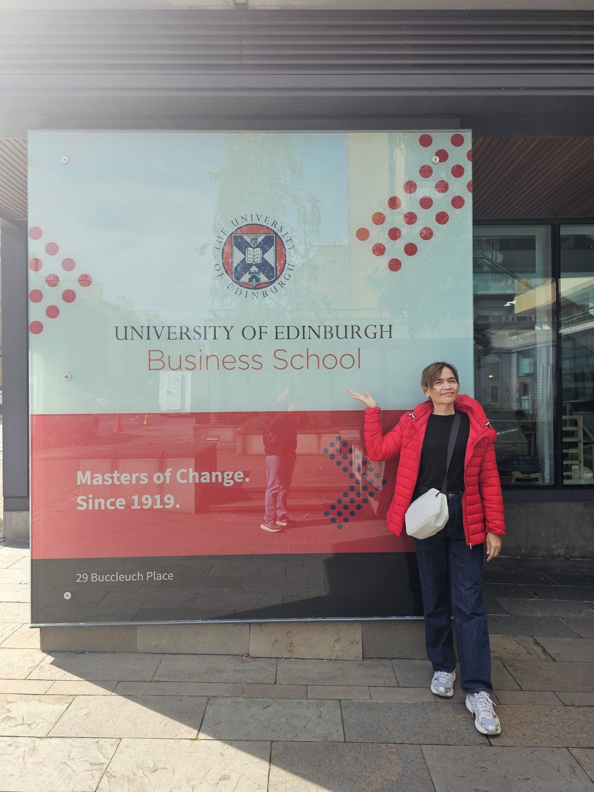
Jadi inilah jawabannya, buat yang sejak Hari 12 bertanya-tanya Annette kuliah apa.
Nama programnya sendiri layak dibaca pelan-pelan: Banking, Innovation and Risk Analytics — perbankan, inovasi, dan analitik risiko. Tiga kata itu bukan sekadar rangkaian. Yang pertama soal cara bank bekerja, yang kedua soal teknologi yang sedang mengubah cara itu, dan yang ketiga soal mengukur risiko lewat data, bukan lewat firasat.
Dan urutannya masuk akal kalau dilihat dari kota tempatnya diajarkan. Edinburgh adalah salah satu pusat keuangan terbesar di Inggris di luar London — kota tempat bank, dana pensiun, dan perusahaan asuransi besar berkantor pusat selama berabad-abad. Jadi jurusan seperti ini di sini bukan teori yang jauh dari lapangan; kantornya ada di jalan-jalan yang tiap hari dilewati.
Soal satu tahun itu perlu dijelaskan, karena sering bikin kaget orang Indonesia. Master di Inggris umumnya dirancang selesai dalam dua belas bulan — kuliah padat sepanjang tahun, lalu langsung tesis di musim panas, tanpa jeda semester panjang. Bandingkan dengan S2 di Indonesia yang lazimnya dua tahun.
Efeknya bukan cuma soal waktu. Satu tahun berarti satu tahun biaya hidup, satu tahun sewa kamar, dan satu tahun lebih cepat kembali bekerja. Untuk kuliah di negara semahal ini, selisih satu tahun itu angka yang sangat besar — dan itulah salah satu alasan Inggris jadi tujuan favorit penerima beasiswa dari mana-mana.
Dan soal LPDP — buat pembaca yang belum kenal namanya: itu beasiswa dari pemerintah Indonesia, dibiayai dana abadi pendidikan yang dikelola negara, dan salah satu jalur paling besar yang mengirim orang Indonesia belajar ke luar negeri hari ini. Seleksinya berlapis, dan yang lolos menandatangani kewajiban: pulang ke Indonesia setelah lulus, dan mengabdi di sana.
Itu juga menutup satu benang yang dibuka dua hari lalu di trotoar London. Waktu itu rombongan wisudawan Indonesia bertoga yang ditemui di Westminster bercerita bahwa sebagian dari mereka dibiayai LPDP dan sebagian lagi beasiswa pemerintah Inggris. Ternyata satu orang di rombongan kami sendiri berangkat dari jalur yang sama.
Jadi foto papan nama ini bukan sekadar foto papan nama. Itu gedung tempat uang publik Indonesia diubah jadi satu gelar — dalam dua belas bulan, di kota yang jaraknya belasan ribu kilometer dari rumah.
Angka 1919 di papannya juga bukan angka sembarangan. Artinya sekolah ini sudah berumur lebih dari seratus tahun — berdiri tepat setelah Perang Dunia I berakhir, di masa ketika hampir tidak ada universitas di Eropa yang menganggap “bisnis” layak jadi bidang studi tersendiri.
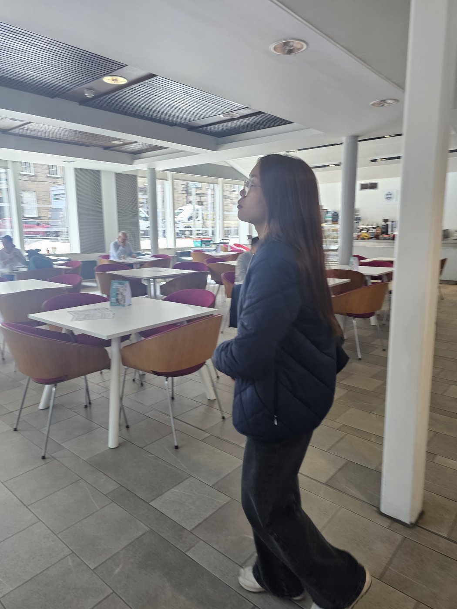
Di dalamnya: kafe kampus dengan kursi ungu, ruang santai bersofa, dan langit-langit tinggi. Bukan ruang kuliah yang dilihat, tapi ruang-ruang di antaranya — dan justru di situ mahasiswa menghabiskan sebagian besar waktunya.
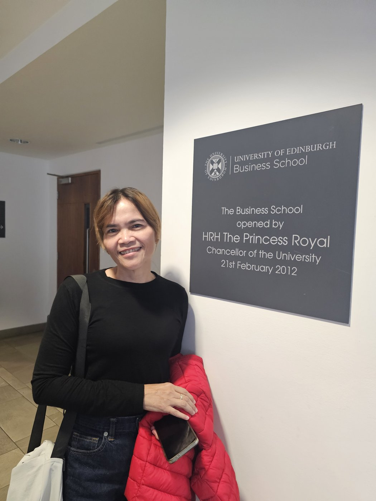
Dua hal dari papan kecil ini layak dijelaskan, karena keduanya gampang salah tangkap.
Pertama, sekolahnya jauh lebih tua daripada gedungnya. Sekolahnya sejak 1919, gedungnya baru 2012. Jadi papan itu bukan menandai kelahiran, tapi pindah rumah.
Kedua, jabatan Chancellor di universitas Inggris bukan seperti rektor di kita. Chancellor adalah jabatan kehormatan — dia yang menyalami wisudawan di panggung dan mewakili universitas di acara resmi, tapi tidak menjalankan kampusnya sehari-hari. Yang benar-benar memimpin operasional bergelar Principal atau Vice-Chancellor. Jadi kalau di foto wisuda ada tokoh kerajaan yang menyalami satu per satu, itu bukan kebetulan — memang itu tugasnya.
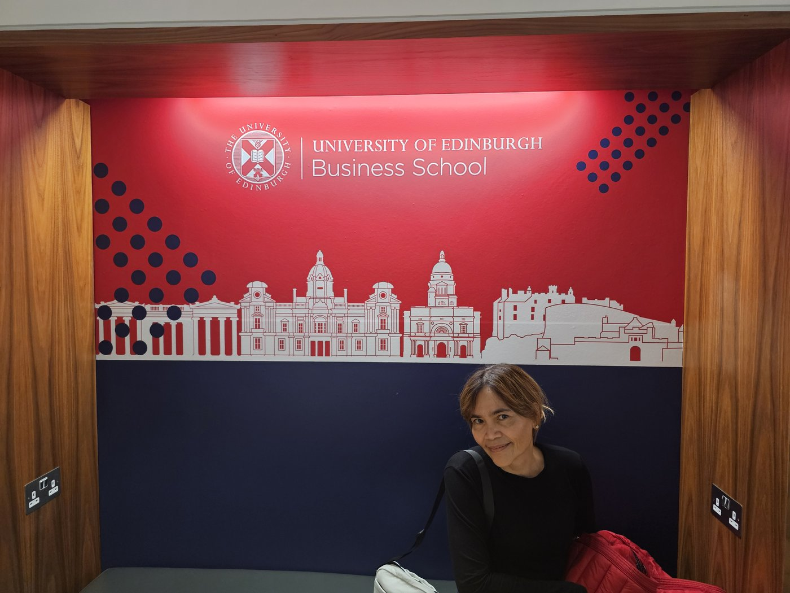
Karena ini bukan sekadar melihat gedung
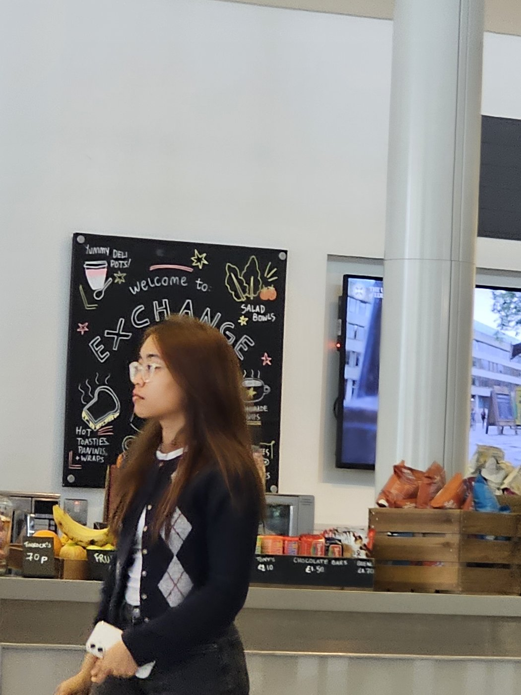
Harga-harga itu ada gunanya dicatat. Kafe kampus di Inggris memang sengaja dipatok lebih murah daripada kedai di jalan, karena pembelinya mahasiswa yang datang tiap hari. Satu buah 70 pence, di kota yang segelas kopi turisnya bisa empat kali lipat itu.
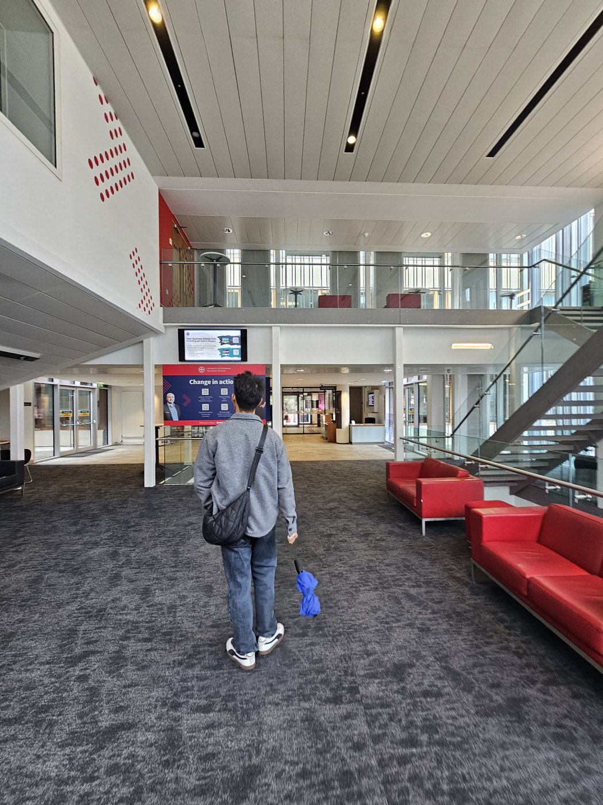
Dan perhatikan selisih waktunya: foto papan nama tadi jam 14.02, foto ini jam 15.54. Hampir dua jam dihabiskan di gedung ini.
Itu bukan kunjungan wisata. Buat orang tua yang selama setahun cuma mendengar nama gedung ini lewat telepon, berjalan di lorongnya sendiri adalah cara paling sederhana untuk akhirnya bisa membayangkan. Kafe mana yang dipakai, sofa mana yang diduduki menunggu kelas, lorong mana yang dilewati tiap pagi.
Dan burung merpati yang jumlahnya keterlaluan
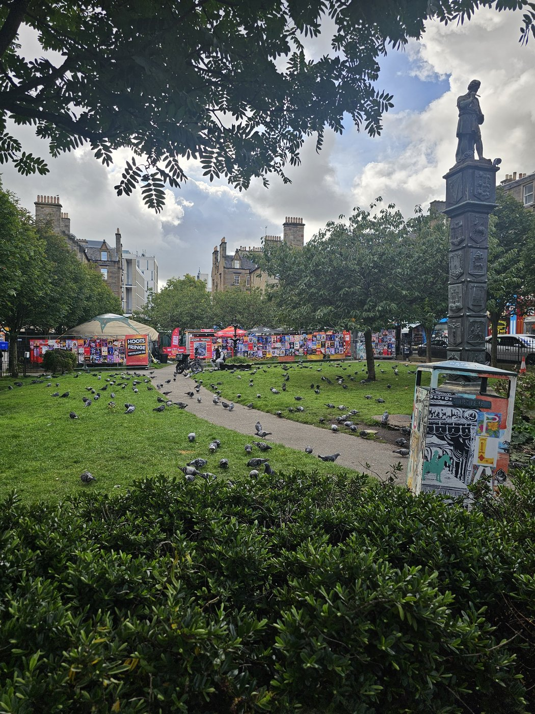
Taman ini kecil, cuma sepetak rumput di tengah blok gedung. Tapi selama Agustus, tiap meter pagarnya berubah jadi ruang iklan festival. Poster-poster itu dipasang berlapis, satu menimpa yang lain, sampai pagarnya sendiri tidak kelihatan lagi.
Dan itu, sekali lagi, menjelaskan angka yang tadi pagi dipakai untuk bicara soal harga penginapan. Kalau taman lingkungan sekecil ini pun jadi rebutan tempat memasang poster, bayangkan berapa banyak pertunjukan yang harus berebut perhatian di kota ini.
Dan tahun ini kebetulan tahun peringatannya
Beberapa langkah dari taman itu, berdiri satu bangunan yang bentuknya benar-benar seperti kuil Yunani dipindahkan ke Skotlandia.
Baca ulang angkanya: tiga ratus tahun. Artinya sekolah kedokteran kota ini berdiri pada 1720-an — dan tahun ini, tahun kami lewat di depannya, kebetulan tahun peringatan ketiga ratusnya.
Buat yang belum pernah dengar: Edinburgh adalah salah satu pusat kedokteran paling berpengaruh dalam sejarah dunia. Selama abad ke-18 dan ke-19, cara mengajar kedokteran di sini — ceramah, pembedahan yang ditonton bersama, praktik langsung di bangsal rumah sakit — ditiru sekolah-sekolah kedokteran di benua lain, termasuk Amerika. Banyak nama besar dalam sejarah kedokteran modern belajar atau mengajar di kota ini.
Tapi sejarah itu juga punya sisi gelap yang tidak disembunyikan kota ini. Kelas anatomi butuh jenazah, dan hukum saat itu memasoknya jauh lebih sedikit daripada yang dibutuhkan. Yang muncul kemudian adalah perdagangan mayat — mula-mula digali dari kuburan, lalu, dalam kasus paling terkenal di kota ini pada 1828, diperoleh dengan cara membunuh.
Skandal itu mengguncang seluruh Kerajaan Inggris dan berujung pada perubahan undang-undang beberapa tahun kemudian, yang mengatur dari mana jenazah untuk pendidikan kedokteran boleh berasal. Jadi aturan etika kedokteran yang sekarang dianggap biasa itu sebagiannya lahir dari kejadian di kota ini.
Dan papan penjelasannya menyimpan satu alamat yang tidak enak
Dua menit jalan kaki dari situ, lewat sebuah gapura batu berlengkung, dan tiba-tiba keramaian jalan hilang.
Sekarang bagian yang paling menarik, dan sekaligus paling tidak enak: Kirk o’ Field.
Nama itu bukan nama biasa dalam sejarah Skotlandia. Di rumah di kompleks Kirk o’ Field itulah, pada Februari 1567, suami Mary Ratu Skotlandia ditemukan tewas setelah bangunan tempatnya menginap hancur oleh ledakan mesiu. Kasusnya tidak pernah benar-benar tuntas, tapi kecurigaan yang menempel pada sang ratu ikut menjatuhkannya dari takhta.
Enam belas tahun kemudian, di tanah itulah kota Edinburgh mendirikan universitasnya.
Jam 16.08, di bawah gapuranya. Perhatikan ujung lorongnya: lengkung batu itu membingkai gedung di seberang pelataran seperti bingkai foto — dan itu memang disengaja arsiteknya.
Dan papan kedua yang menjelaskan apa saja isinya
Papan ini menambahkan satu hal yang bikin pelataran ini terasa berbeda begitu tahu: ruangan-ruangan di sekelilingnya masih dipakai. Di sisi satu ada Fakultas Hukum dan perpustakaannya; di sisi lain kantor pusat administrasi universitas; dan di ujungnya sebuah galeri seni yang, kata papannya, dulunya adalah museum sejarah alam universitas sebelum berubah jadi ruang pamer seni sejak 1975.
Jadi pelataran ini bukan monumen. Ini kantor, ruang kuliah, dan galeri yang kebetulan berumur dua ratus tahun.
Kubahnya, dan patung emas kecil di puncaknya. Ini bagian yang menurut papan tadi baru ditambahkan tahun 1887 — tujuh puluh tahun setelah gedungnya mulai dibangun, dan dibiayai sumbangan.
Pagi tadi dua nama. Sore ini ratusan
Di salah satu sudut pelataran, di bawah atap sebuah serambi, berdiri sesuatu yang mudah dilewati kalau sedang buru-buru.
Tulisan yang dipahat di batunya: “TO THE GLORIOUS MEMORY OF THE ALUMNI OF THIS UNIVERSITY WHO FELL IN THE GREAT WAR” — untuk mengenang para alumni universitas ini yang gugur dalam Perang Besar, dengan angka Romawi MCMXIV dan MCMXX di kedua ujungnya: 1914 dan 1920. Papan-papan yang lebih rendah di bawahnya bertanda 1939 dan 1945.
Dan di atasnya ada satu baris Latin yang layak diterjemahkan pelan-pelan: “VIVERE NOS DOCEANT QVI DIDICERE MORI” — “semoga mereka yang telah belajar mati, mengajari kita cara hidup.”
Bunga merah di lantainya juga bukan hiasan. Poppy adalah bunga liar yang tumbuh subur di tanah bekas medan perang di Eropa daratan setelah Perang Dunia I — tanah yang porak-poranda oleh parit dan ledakan justru jadi tempat bunga itu bermunculan berbondong-bondong. Sejak itu, di Inggris dan negara-negara persemakmurannya, poppy merah jadi lambang mengenang yang gugur, dan karangan seperti ini diletakkan tiap tahun lalu dibiarkan sampai lapuk.
Dan di sinilah hari ini menutup lingkarannya sendiri. Pagi tadi, di dinding katedral, ada dua nama yang gugur pada tanggal yang sama. Sore ini, di dinding kampus, ada ratusan. Dua gedung berbeda, satu kota, dan daftar yang sama panjangnya dengan generasi yang hilang darinya.
Yang satu dari lantai atas bus, yang satu dari trotoar
Dua foto ini, diambil beda empat puluh empat detik, sebenarnya memperlihatkan dua cara berbeda menghabiskan sore di kota ini. Yang satu lewat dari atas: rute tetap, rekaman narasi di telinga, berhenti di titik-titik yang sudah dipilihkan. Yang satu lagi jalan kaki, berhenti di papan-papan kecil yang tidak masuk daftar mana pun.
Dua-duanya sah. Tapi yang berikutnya cuma bisa ditemukan dengan cara kedua.
Nama yang sudah dibaca lima jam sebelumnya, sekarang ada di depan mata
Baca ulang namanya, lalu ingat lagi papan yang dibaca tadi pagi di dalam katedral. Papan itu menulis bahwa National Covenant “ditandatangani di gereja Greyfriars, tidak jauh dari sini.”
Dan inilah kompleks yang namanya disebut itu. Perkamen yang lima jam sebelumnya dilihat terkunci di lemari kaca, di sinilah dulu orang berbaris untuk membubuhkan tanda tangannya — tahun 1638, sebelum salinannya dibawa keliling negeri.
Bangunan yang di foto ini adalah gedung aulanya, bukan gerejanya sendiri. Tapi itu tidak mengurangi rasanya. Sebuah nama yang tadi pagi cuma tulisan di papan museum, sore ini jadi alamat yang bisa didatangi dengan berjalan kaki.
Dan dua kalimat Latin yang menjelaskan kota ini lebih baik daripada brosur mana pun
Jadi benda ini berumur lebih dari tiga setengah abad, dan dipasang bukan sebagai monumen melainkan sebagai keran umum. Menurut keterangan di sisinya, sumur ini bagian dari jaringan air pipa pertama kota Edinburgh — air dialirkan dari mata air di luar kota, lewat pipa timah, ke titik-titik seperti ini.
Sebelum ada itu, air harus ditimba dan dipikul naik ke gedung-gedung bertingkat tinggi yang sudah dijelaskan kemarin. Jadi sumur ini bukan hiasan sejarah — ini infrastruktur, dan di zamannya termasuk barang mewah.
Tiga kata itu NISI DOMINUS FRUSTRA — dan papan besi di sebelahnya menerjemahkannya sendiri: “Labour is a vain thing without the Lord”, kerja itu sia-sia tanpa Tuhan. Itu moto resmi kota Edinburgh, diambil dari Mazmur, dan sudah dipakai sejak berabad-abad lalu.
Di sisi lain papan yang sama ada moto kedua: VIRTUTE AQUIRITUR HONOS — “kehormatan diperoleh lewat kebajikan.”
Dan ada yang menarik dari dua kalimat itu berdiri di benda ini. Bukan di gerbang istana, bukan di dinding gereja — tapi di sebuah keran air umum. Tempat orang paling miskin di kota ini dulu mengantre tiap hari.
Alun-alun yang sekarang penuh kafe, dan dulu bukan untuk itu
Namanya berarti “pasar rumput”, dan itu memang fungsinya dulu: tempat jual beli ternak dan pakan, berabad-abad lamanya, di cekungan datar di bawah tebing kastil. Sekarang isinya kafe, hotel, pub, dan meja-meja di trotoar.
Yang tidak ada di papan iklan mana pun
Ini bukan hiasan alun-alun. Ini penanda tempat orang dihukum mati.
Selama berabad-abad, Grassmarket adalah tempat eksekusi umum kota Edinburgh. Dan yang paling banyak mati di sini, pada paruh kedua abad ke-17, adalah para penanda tangan dan pendukung Covenant — dokumen yang sama yang tadi pagi dilihat terkunci di lemari kaca.
Dan itu yang bikin hari ini terasa lain. Kami tidak merencanakan urutan ini. Pagi masuk katedral karena kebetulan lewat; sore turun ke Grassmarket karena kebetulan jalan kaki ke arah situ. Yang menyambungkan ketiganya cuma satu lembar perkamen berumur hampir empat ratus tahun.
Dan di situlah dua Edinburgh berdiri berdampingan dalam satu bingkai foto. Satu batu peringatan untuk orang yang benar-benar mati karena keyakinannya, dan satu pemandu berkostum penyihir yang menjual sejarah gelap kota ini sebagai hiburan malam. Keduanya sah, keduanya laku, dan keduanya berjarak lima langkah.
Setengah jam berdiri menonton, dan tidak ada satu pun tiket dibeli
Kode QR itu penting, dan sangat menandai zaman. Pertunjukan jalanan hidup dari uang yang dilempar penonton ke topi — dan di negara yang orangnya nyaris tidak lagi membawa uang tunai, topi saja tidak cukup. Jadi sekarang topinya ditemani papan kode QR: pindai, lalu transfer.
Jam 17.10 dan 17.21. Perhatikan yang kanan: penontonnya ikut naik ke arena. Itu bagian tetap dari pertunjukan jalanan — melibatkan satu-dua orang dari kerumunan, supaya sisanya merasa ikut punya.
Dan itu keahlian yang sebenarnya dari pemain jalanan, dan bukan yang di badannya. Setengah jam itu bukan cuma akrobat — itu mengumpulkan kerumunan dari nol, menahannya supaya tidak bubar, dan menaikkan tegangan sedikit demi sedikit sampai puncaknya. Trik fisiknya cuma bagian terakhir.
Dan semua ini gratis ditonton, di trotoar, tanpa tiket. Di kota yang bulan ini menjual ribuan pertunjukan berbayar, yang paling ramai ditonton sore itu justru yang panggungnya batu jalanan.
Dan itu penutup yang rapi untuk hari ini tanpa direncanakan. Paginya dibuka dengan indomie di dapur pinjaman; siangnya dihabiskan di gereja berumur ratusan tahun; sorenya di gedung kaca tempat seorang anggota rombongan ini menghabiskan dua belas bulan terakhir hidupnya, dibiayai uang publik dari negara sendiri; ditutup di pelataran tempat universitas itu sendiri bermula, lebih dari empat abad lalu, di atas tanah yang riwayatnya jauh dari tenang; lalu turun ke alun-alun tempat orang-orang yang menandatangani dokumen tadi pagi dihukum mati — dan di alun-alun yang sama, sambil tertawa, menonton akrobat jalanan sampai matahari turun.
Empat hal yang di atas kertas tidak nyambung sama sekali — dan justru itu isi sebenarnya dari perjalanan ini.